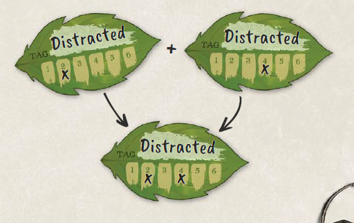
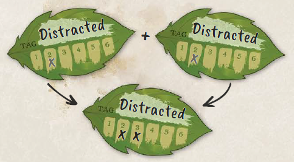
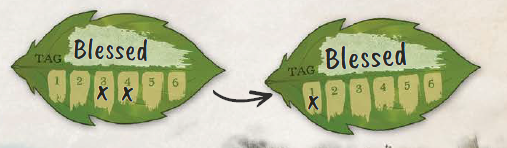

TECENDO O CONTO
Ação e Drama
É hora de partir em uma jornada e contar a história
de seus Heróis, enquanto eles enfrentam perigos e superam
obstáculos em busca de suas Missões – sejam elas tão humildes
quanto obter a receita de pão de um vizinho ou tão grandiosas quanto
derrotar a própria Senhora Sombria.
Este jogo é jogado como uma conversa. As regras entram para ajudar a introduzir
resultados inesperados e desenvolvimentos empolgantes. Elas focam nos Heróis,
em sua jornada e em seus momentos cinematográficos -- o que importa para a sua história --
em vez dos valores numéricos de suas qualidades.
As regras também são intencionalmente dispostas em camadas. Escolher entre resultados Simples, Rápidos,
e Detalhados permite que você controle o ritmo, a tensão e o equilíbrio
entre tecer uma narrativa e a jogabilidade tática.
Jogadores, Heróis, Narrador, Desafios
Este capítulo explica as regras do jogo pela perspectiva dos
jogadores, onde cada um assume o papel de um Herói na história.
Durante o jogo, o Narrador é responsável por introduzir o
cenário, por interpretar os NPCs e os Desafios dentro de cada cena,
e por agir como o árbitro do jogo. Desafios são personagens,
obstáculos e forças que trabalham contra os Heróis. O papel do
Narrador é explicado no Volume II: O Narrador.
Geralmente, o Narrador é um dos participantes que não interpreta
um Herói, no estilo tradicional dos jogos de RPG de mesa.
Porém, você também pode usar as regras de Narrador no Vol. II para agir coletivamente
como o Narrador (jogo cooperativo) ou para ser o seu próprio Narrador (jogo
solo), com O Oráculo (Vol. II, página 238).
Elementos do Jogo
No tutorial (página 10), você aprendeu sobre estes componentes
básicos do jogo:
- Rótulos de história, rótulos impermanentes que descrevem itens, recursos e
aliados recebidos durante o jogo
- Condição, rótulos especiais que descrevem condições temporárias e têm
um nível entre 1 e 6
- Limites, o nível máximo de um condição que um Herói ou Desafio pode receber
antes de ser superado ou de algo dramático acontecer
Estes elementos serão mencionados por todo este capítulo. Eles são
explicados por completo mais adiante neste capítulo (começando na página 164).
 MERGULHE MAIS FUNDO
MERGULHE MAIS FUNDO
Algumas seções deste capítulo
estão envoltas e marcadas com
uma tocha, indicando que se tratam de
regras expandidas ou conceitos
avançados, além das regras básicas.
Estas podem ser facilmente ignoradas
durante as suas primeiras partidas.
Retorne a elas quando estiver
curioso sobre as riquezas adicionais
que repousam sob a superfície.
O CICLO DE JOGO
Seu jogo é jogado em sessões, que geralmente levam várias horas. Em cada
sessão você joga através de uma ou mais cenas. Cenas podem se juntar
para formar uma história com começo, meio e fim, chamada de aventura,
e múltiplas aventuras podem se combinar em sagas mais longas, conhecidas como
séries ou campanhas, jogadas ao longo de muitas sessões.
Em cada cena, os Heróis se alternam para agir, e cada turno se desenrola
por meio destes três passos:
ESTABELECER
O Narrador apresenta a cena, descrevendo:
- onde seus Heróis estão e o que está acontecendo ao redor deles,
- quais são os riscos (por que seus Heróis estão lá e por que isso importa),
- quais são os Desafios (qualquer coisa em seu caminho para os seus objetivos), e
quais Ameaças se impõem aos seus Heróis ou aos seus objetivos, se houver.
O Narrador então pergunta “O que você faz?” e concede a um Herói o
holofote, de forma que todos passem a ouvi-lo.
AÇÃO
Quando o seu Herói estiver no holofote, você descreve o que o seu Herói está fazendo na
cena, respondendo a tudo o que foi Estabelecido.
O Narrador pode escolher uma das três maneiras de determinar o resultado da
ação: decidir o que aconteceu ou lhe dar mais detalhes sobre a cena (Simples),
pedir que você role os dados (Rápida), ou pedir que você role os dados e, se for
bem-sucedido,
gaste o seu Poder em Efeitos de acordo com a ação do seu Herói
(Detalhada).
CONSEQUÊNCIAS
O Narrador aplica Consequências negativas para a sua ação caso qualquer um
dos seguintes eventos tenha ocorrido:
- você ignorou uma Ameaça,
- sua rolagem gerou Consequências,
- o Narrador escolheu invocar os seus rótulos de fraqueza como Consequências.
O Narrador pode adicionar Efeitos.
O Narrador também pode permitir que você reduza
esses Efeitos ao fazer uma rolagem de reação.
Estes passos se repetem. Seguindo a Ação e Consequências de um Herói,
o Narrador restabelece a cena e concede o holofote a um
Herói diferente (se houver múltiplos Heróis), que então realiza a sua Ação
e possivelmente gera Consequências.
Junto, este ciclo é chamado de turno. Quando todos os Heróis tiverem tido o
seu turno, isso é uma rodada. Esses termos são apenas por conveniência e
não desempenham um papel principal nas regras do jogo.
A cena termina quando o Narrador assim disser: seja por não ter mais nada
para se fazer na cena, por todos os Heróis terem ido embora, ou às vezes, por
talento dramático. Geralmente, isso acontece quando os riscos foram superados, perdidos, ou
adiados, e quando todos os assuntos na cena foram concluídos.
Os Desafios que Ficam no seu Caminho
Derradeiramente, em cada cena, os Heróis tentam alcançar os seus
objetivos por meio da superação daquilo que fica em seu caminho – os Desafios.
Dependendo da história que vocês contam e da cena específica, os Desafios
podem ser qualquer coisa, desde monstros, passando por terrenos perigosos,
até vizinhos bisbilhoteiros, ou até mesmo ter que criar um presente especial para a
celebração de alguém.
Os Desafios agem criando Ameaças contra o seu Herói durante a fase de
Estabelecer e, se não forem interrompidos, entregando Consequências. Eles
não têm os seus próprios turnos. Antes do seu turno, ao Estabelecer a
cena, o Narrador diz “o monstro se prepara para atacar você!”
– essa é uma Ameaça, mas que ainda pode ser evitada. Se você falhar em impedir essa
Ameaça com a sua próxima ação, o Narrador pode dizer “o monstro
crava suas mandíbulas na sua perna!” – essas são as Consequências por não
lidar com aquela Ameaça.
Os Desafios são superados ao tomar uma ação: seja por meio de uma ação Rápida e
bem-sucedida ou ao tomar uma ação Detalhada e dar ao Desafio um
condição que atenda ou exceda um dos seus Limites; é uma decisão do
Narrador. Quando se deparar com um Desafio, você também pode tomar uma
ação para entender as habilidades dele (Ameaças & Consequências) e como
é a melhor forma de superá-lo (Limites), novamente tanto com uma ação Rápida quanto uma
Detalhada para descobrir detalhes valiosos.
É muito raro que um Narrador permita que um Herói supere um Desafio
com uma ação Simples. Desafios são, por definição, perigosos e qualquer
engajamento com eles carrega um resultado incerto, e portanto um teste
provavelmente estará envolvido.
CENAS COM POUCOS OU NENHUM RISCO
Enquanto a história é levada adiante ao superar Desafios, muitas
vezes o Narrador fará os Heróis gastarem uma cena apenas conversando
com amigos, ou se preparando para empreitadas futuras. Nessas cenas de
baixos riscos o ciclo de jogo progride normalmente, mas
não há Ameaças, ou apenas algumas mais brandas. Uma cena de acampamento ou estadia (página
179) também não possui riscos tipicamente.
Gerenciando o Holofote
A escolha de a quem conceder o holofote é do Narrador e, portanto, de
quem será o próximo turno. Essa decisão pode se basear no fato de ser a situação
única de cada Herói na cena, em considerações dramáticas
(aquilo que torna a contação da história melhor), ou na ordem em que estão sentados.
O Narrador deve dividir o holofote de forma justa entre todos os
jogadores, o que frequentemente significa completar uma rodada antes de permitir que
um Herói aja novamente.
Um Herói pode reter o holofote para uma ação adicional se gastar
Poder em um feito extra (página 157), e o Narrador também pode
escolher manter o holofote no Herói, para talento dramático ou para permiti-lo
tomar uma ação de acompanhamento, como logo após uma ação de preparo (Rótulos
Indiretos e Ações de Preparo, página 153).
AGINDO PRIMEIRO
Para ver se o seu Herói age antes de algo ou alguém a mais, o Narrador
pode conceder o holofote a você e pedir para que faça uma rolagem, geralmente com um
resultado Rápido e que envolva velocidade e vigilância. Se for bem-sucedido, você
pode manter o holofote e agir antes do que quer que aconteça a seguir.
Isso presume que o seu Herói possui uma chance razoável de agir primeiro.
TOMANDO AÇÃO:
"O QUE VOCÊ FAZ?"
Como um jogador, seu papel principal no jogo é escutar a
narração da cena e então, quando o holofote
for seu, assumir a contação da história para descrever e dizer
o que o seu Herói está pensando, sentindo e, o mais importante, o que
estão predestinados a fazer – sua ação.
Descreva a Sua Ação
Todas as ações do Herói começam como uma descrição,
ao dizer o que você faz.
Você não está limitado a nenhum conjunto predeterminado de
ações, contudo, deve permanecer fiel à lógica inerente
da história. Assim como em uma lenda, o seu Herói pode...
escalar uma beirada escorregadia
insultar um rival
arremessar uma lança
em um monstro
beijar uma pessoa amada
cozinhar uma sopa de urtigas
(ou soltar nela
um ingrediente suspeito)
...o que você
puder imaginar.
Aquilo que você descrer é o que o seu Herói está
tentando fazer; o Narrador e as regras do
jogo ajudam a determinar o verdadeiro resultado
da sua ação dentro de uma história compartilhada.
Determine o Resultado
A seguir, o Narrador decide como chegar ao resultado
da sua ação descrita, escolhendo entre três maneiras:
A MANEIRA SIMPLES
O Narrador considera a situação, os rótulos do Herói,
os Desafios na cena, a Virtude da ação e talvez
fatores ainda desconhecidos para o seu Herói.
O Narrador decide se a ação termina com Sucesso,
Consequências, ou ambos.
O Narrador escolhe a maneira Simples quando:
- O resultado da ação é certo (Sucesso certo, falha
certa, e/ou Consequências certas) baseando-se na lógica inerente
da história.
- A ação ainda não é dramática o suficiente para introduzir os dados, e
é mais fácil apenas dizer o que acontece.
 SUCESSO
SUCESSO
A ação se desenrola como
esperado, ou melhor,
alcançando seu objetivo pretendido
ou superando um obstáculo.
O Narrador também pode dar a
você um rótulo útil ou condição.
 CONSEQUÊNCIAS (p.160)
CONSEQUÊNCIAS (p.160)
O Narrador decide sobre
um desenvolvimento narrativo
prejudicial para o Herói,
e pode dar ou remover
um rótulo ou condição de maneira
que atrapalhe o Herói.
A MANEIRA RÁPIDA
O Narrador pede para que você faça uma rolagem para determinar o resultado.
Juntos, vocês contam o Poder da ação ao invocar
rótulos e condição relevantes - os seus, os do seu alvo, ao seu redor, etc.:
- +1 de Poder para cada rótulo útil
- -1 de Poder para cada rótulo prejudicial
- Adicione o nível do maior condição útil
- Subtraia o nível do maior condição prejudicial
- +/-3 de Poder ou +/-6 de Poder por Virtude (página 171)
Você (o Herói) então rola dois dados de seis lados, soma os seus resultados,
adiciona o seu Poder, e compara o total a estas categorias.
O Narrador escolhe a maneira Rápida para introduzir um elemento de risco
com os dados, enquanto ainda mantém a história em movimento.
Tenha em Mente
- O Poder final pode ser zero ou negativo.
- Você pode queimar um rótulo por Poder (página 158) para ganhar +3 de Poder em vez de +1.
- Rolar duplo uns (1 e 1) sempre significa Consequências sem
Sucesso, enquanto rolar duplo seis (6 e 6) sempre significa Sucesso
sem Consequências, independentemente do Poder.
 10+
10+
Sucesso, como na
ação Simples. Sem Consequências.
 9-7
9-7
Sucesso & Consequências,
como na ação Simples.
 6-
6-
Consequências, como na
ação Simples. Sem Sucesso.
A MANEIRA DETALHADA
O Narrador pede para que você conte o seu Poder e
role os dados como na maneira Rápida, acima; se você atingir
um Sucesso, você o expressa escolhendo como gastar o seu
Poder em diferentes Efeitos de jogo (página 154).
O Narrador escolhe a maneira Detalhada quando deseja destrinchar o
conflito lance a lance, medir o seu sucesso, ou deixar você
definir o seu próprio sucesso.
Tenha em Mente
- Quando você tiver Sucesso você sempre tem ao menos 1 de Poder para gastar, mesmo que
você tenha rolado com um Poder de zero ou menos. (A Regra do Mínimo de Um)
- Os Efeitos escolhidos devem se adequar à ação descrita.
 10+
10+
GASTE O SEU PODER:
- Adicionar ou riscar um rótulo (2 de Poder)
- Adicionar ou reduzir um condição (1 de Poder por nível)
- Descobrir um detalhe valioso (1 de Poder)
Veja opções avançadas na página 154.
Sem Consequências.
 9-7
9-7
Sucesso (como em 10+)
& Consequências como
na ação Simples.
 6-
6-
Consequências, como na
ação Simples. Sem Sucesso.
Ações Simples Comuns
Ações que se concentram em perceber a cena (olhar, escutar,
cheirar), mover-se pela cena, e conversar com outros
personagens, geralmente são resolvidas utilizando a maneira Simples.
- Você diz "Eu olho ao redor da esquina", e o Narrador responde "Você
vê um guarda patrulhando perto do portão do jardim."
- Você diz "Eu ando até o balcão da taverna", e o Narrador diz "Certo.
Você está lá."
- Você diz "Eu comento com Florian que ele está com uma cara de muito mau humor esta
manhã", e o Narrador diz "Florian ri um pouco mas então
fica sério e pergunta a você onde você estava noite passada durante a
oração da vila."
A exceção ocorre quando essas ações apresentam algum perigo, drama,
ou dificuldade implícita, por exemplo, discernir sentimentos ocultos
de alguém, correr por uma ponte em chamas, ou convencer alguém
a fazer algo que eles não estavam inclinados a fazer. Nesses casos, o
Narrador pode optar por um resultado Rápido ou Detalhado.
O Narrador decide se focar em perceber, mover-se ou conversar com outros
personagens encerra o seu holofote, ou se você pode manter o holofote
– continuar olhando ao redor, continuar movendo-se, continuar conversando – até que isso leve a uma
ação dramática.
Contabilizando o Poder
Quando você utiliza os métodos de resolução Rápida ou Detalhada,
o Poder da sua ação é determinado por todos os rótulos e
condição que afetam diretamente a sua ação, positiva ou
negativamente: os seus próprios, os do seu oponente ou os do seu alvo, ou
no ambiente.
Por exemplo, se o seu Herói estiver tentando carregar um barril de peixes:
- Ser forte como um boi ajuda diretamente a ação.
- Um barril que é muito pesado atrapalha diretamente a
ação.
- Paralelepípedos escorregadios atrapalham diretamente a
ação.
- Sentir-se revigorado-2 ajuda diretamente a ação.
- Ser charmoso não ajuda ou atrapalha a ação. Isso é
irrelevante.
Sempre que você contabilizar o Poder, você invoca (declara) todos os rótulos positivos ou
negativos que o afetem diretamente; o Narrador pode invocar mais rótulos
na cena, ou invocar os seus rótulos de fraqueza, se você não o tiver feito. Então:
- Você ganha 1 de Poder para cada rótulo positivo.
- Você perde 1 de Poder para cada rótulo negativo.
- Você adiciona o nível do maior condição positivo ao seu Poder.
- Você subtrai o nível do maior condição negativo do seu Poder.
O Poder final pode ser zero ou negativo.
Rótulos irrelevantes não contam e são simplesmente ignorados ao contabilizar
o Poder.
RÓTULOS INDIRETOS E AÇÕES DE PREPARO
Rótulos indiretos são rótulos que são apenas um pouco relevantes, ou que dão a
impressão de estarem sendo forçados para se aplicarem porque descrevem algo muito geral.
Eles podem afetar o resultado, mas algo a mais é necessário para
trazê-los a um patamar impactante – um passo extra.
Para utilizá-los, você deve primeiro tomar uma ação Detalhada e invocar
esses rótulos indiretos para criar novos rótulos ou condição que sejam diretamente
positivos para a sua ação principal. Por exemplo, ser engenhoso não
ajuda a carregar um barril de peixes, mas você pode usar isso para construir ou encontrar um
carrinho de mão que seria diretamente útil para carregar o barril.
Este tipo de ação, de criar rótulos que ajudarão em outra ação, é
chamada de ação de preparo.
AÇÕES DE EXEMPLO E SEU PODER
Uma coleção abrangente de exemplos adicionais pode ser encontrada no Grimório de Ação.
ESCALANDO UMA BEIRADA…
Herói:
atlético
+1
escalador de rochas
+1
picareta de escalada
+1
 imprudente
-1
imprudente
-1
Poder 2
… COM AS SUAS MÃOS ATADAS…
Herói:
restrito-3
-3
Poder -1
… NA CHUVA.
Ambiente:
chovendo-2
0
(não é o pior status)
Poder -1
Irrelevante
mente inquiridora
endividado-3
Indireto
atento
apoios fáceis para os pés
DOMANDO UMA FERA SELVAGEM…
Herói:
domador de animais
+1
sussurros calmantes
+1
Alvo:
selvagem-2
-2
Poder 0
… COM A BÊNÇÃO DA DEUSA…
Herói:
abençoado-2
+2
Poder 2
… EM UM CAMPO DE BATALHA.
Ambiente:
cheiro de morte
-1
Poder 1
Irrelevante
armadura de couro
revigorado-1
Indireto
provisões
cubo de açúcar
PERGUNTANDO SOBRE UM BOATO EM UMA TAVERNA…
Herói:
sociável
+1
trocar histórias
+1
farra
+1
Poder 3
… CHEIA DE LOCAIS RABUGENTOS…
Alvo:
rabugento-2
-2
Poder 1
… QUE VOCÊ JÁ ENGANOU ANTES.
Herói:
 má reputação
-1
má reputação
-1
Poder 0
Irrelevante
intimidação
 bloqueio de espada fraco
bloqueio de espada fraco
Indireto
vigarista
uma rodada de bebidas
ENFAIXAR UM ALIADO INQUIETO…
Herói:
médico
+1
enfaixar ferimentos
+1
Alvo:
 mau paciente
-1
mau paciente
-1
Poder 1
… COM POUCAS ATADURAS OU POMADAS RESTANDO…
Herói:
com-poucos-suprimentos-1
-1
Poder 0
… MAS COM DETERMINAÇÃO.
Herói:
focado-2
+2
Poder 2
Irrelevante
uma bússola
navegar pelas estrelas
Indireto
compaixão
aumentar foco
Gastando Poder Em Efeitos
Sempre que você gastar Poder (mais comumente, quando você
for bem-sucedido em uma ação Detalhada ou reação), você pode gastá-lo
nos seguintes Efeitos:
- Adicionar ou fornecer ou recuperar um rótulo – 2 de Poder
- Riscar um rótulo – 2 de Poder
- Dar um condição – 1 de Poder por nível
- Reduzir um condição – 1 de Poder por nível
- Descobrir um detalhe valioso (página 155) – 1 de Poder
- Realizar um feito extra (página 157) – 1 de Poder, mas apenas
após ao menos 1 de Poder já ter sido gasto no propósito principal da
ação (É por isso que é chamado de um feito extra)
Os Efeitos que você escolhe devem sempre fazer sentido
para a ação que você descreveu
. Por exemplo, você não pode
descrever ferir alguém e gastar o seu Poder em
curá-lo, ou em descobrir algo não relacionado.
Você pode comprar cada Efeito diversas vezes e pode
combinar diferentes Efeitos
, mas todos devem fazer
sentido para a ação que você descreveu.
Quando você é bem-sucedido em uma ação ou reação, você
sempre tem ao menos 1 de Poder para gastar
, mesmo que o seu Poder
seja zero ou menor. Isso é chamado de a Regra do Mínimo de Um.
EXEMPLOS DE GASTO DE PODER
Uma coleção abrangente de
exemplos adicionais pode ser encontrada
no Grimório de Ação.
ESCALANDO UMA BEIRADA…
Dê a si mesmo um condição de avançando-para-cima;
quando você atingir seu Limite,
você chega ao topo
DOMANDO UMA FERA SELVAGEM…
Reduza o condição selvagem da fera
Dê à fera um condição amigável
Remova seu rótulo feroz
PERGUNTANDO SOBRE UMA LENDA EM UMA TAVERNA…
Descubra novos detalhes
Faça com que um local desenhe para você um mapa
(crie um rótulo)
ENFAIXAR UM ALIADO INQUIETO…
Reduza o condição ferido do aliado
Use um feito extra para fazer as
ataduras segurarem
EFEITOS DE RÓTULO E CONDIÇÃO
Aqui estão algumas coisas que você pode fazer com Efeitos que criam ou removem
rótulos e condição. Leia mais sobre rótulos de história e condição começando
na página 164.
Contra um Oponente ou um Alvo
- Atacar, ao dar ao seu alvo um condição prejudicial tal como ferido,
ofendido, ou amaldiçoado
- Perturbar, ao dar ao seu alvo um rótulo ou condição prejudicial tal como
ponto fraco, cego, ou emaranhado
- Influenciar, ao dar ao seu alvo um condição de compulsão (página 170)
tal como convencido, enganado, ou
ameaçado
- Enfraquecer, ao remover o rótulo ou condição útil do seu alvo tal como
escudo, confiante, ou enfurecido
Para Si Mesmo ou para um Aliado
- Conceder, ao dar a si mesmo ou a um aliado novas habilidades usando rótulos, tais
como sentidos aguçados, treinamento básico com
lança, ou
feitiço de raio
- Criar, ao dar a si mesmo ou a um aliado novos itens ou aliados usando rótulos,
tais como uma vassoura, poção da bravura,
capa fina, ou guardião etéreo
- Aprimorar, ao dar a si mesmo ou a um aliado um condição útil tal como
mirando, esperançoso, ou protegido
- Restaurar, ao reduzir ou remover um condição nocivo ou rótulo, tal como
ferido, desesperado, ou
aflição de
tosse
, ou recuperar um rótulo riscado
Em um Processo
- Avançar o processo ao dar a ele um condição tal como descongelando ou
Atrasar
o processo ao dar a ele um condição oposto, tal como congelando,
ou remover o condição de progresso
DESCOBRIR
Você pode descobrir ao recordar conhecimentos, através de uma conversa, ao
investigar a cena e procurar por pistas, ou com um feitiço mágico.
Quando você o faz, o Narrador dá a você um detalhe valioso, relevante para
o seu assunto e maneira de inquirir. Você pode então fazer uma ou duas perguntas de
esclarecimento, mas detalhes adicionais podem precisar ser descobertos gastando
mais Poder.
Alternativamente, o Narrador pode permitir que você descreva o detalhe
valioso que o seu Herói encontrou, permitindo que você co-crie alguns dos segredos
da história.
 TOMANDO AÇÃO:
TOMANDO AÇÃO:
MERGULHE MAIS FUNDO
 O Sucesso Concede Um Escudo Narrativo
O Sucesso Concede Um Escudo Narrativo
Quando uma ação tem Sucesso, ela é concluída da maneira que o Herói
pretendia e se torna verdade na sua história: o Herói ataca o carniçal,
pega o filho do moleiro caindo de um penhasco, ou esculpe uma bela
estatueta de ébano.
Esta nova ‘verdade’ impede que outras verdades contraditórias
aconteçam.
Primeiro, ela não pode ser revertida normalmente sem uma Consequência. Se o
Herói pegou o filho caindo do moleiro, apenas uma Consequência pode fazer
a mão do Herói escorregar.
Segundo, ela é protegida de ser revertida por Consequências por pelo
menos a duração do turno, se não mais. Se o Herói pegou o
filho do moleiro, mas a ação gerou Consequências, o Narrador
não pode usar essa Consequência subsequente para anular o que foi
alcançado e fazer o Herói soltar o filho do moleiro.
Da mesma forma, se um Herói segurou com sucesso um enxame de diabretes com
o seu escudo maciço, o Narrador não pode dizer que os diabretes o atravessam
na fase de Consequências subsequente. O Narrador pode escolher
estender este "escudo narrativo" por mais um tempo, dependendo da
situação, dando ao Sucesso um impacto maior. No próximo turno, eles
podem dizer "apesar de arranhões e guinchos, você ainda está segurando
esses diabretes com o seu escudo, por enquanto." – colocando assim temporariamente
em espera a Ameaça dos diabretes.
O Efeito de feito extra (página 157) permite que o Herói adicione verdades
narrativas adicionais ao Sucesso principal de uma ação Detalhada ao custo de
1 de Poder cada. Isso também pode ser alcançado em uma ação Rápida ao Forçar
a Sua Sorte (página 158) e alcançar um Grande Sucesso. Por exemplo,
o Herói que atacou o carniçal pode gastar 1 de Poder para declarar um feito
extra para evitar a mordida do carniçal, prevenindo tal Consequência
naquele turno. O Herói que pegou o filho do moleiro pode usar um Grande
Sucesso para puxar a criança de volta e para longe do penhasco, garantindo
que ela está a salvo pelo resto da cena.
Os Heróis podem usar este "escudo narrativo" para bloquear certas Ameaças
de se materializarem em Consequências e para bloquear Consequências
específicas
. Um Herói pode assar bolinhos com Sucesso para todo mundo
na vila a fim de prevenir que um boato maldoso se espalhe, e assim o
será, por um tempo. Ou um Herói pode gastar 1 de Poder em um feito extra quando
lançar um feitiço para garantir que o feitiço não o exaure.
Ações Simples Com Poder Para Gastar
Quando um Herói realiza uma ação de rotina sem Ameaças por perto, o
Narrador pode tratá-la como um resultado Simples mas ainda permitir que o Herói
gaste Poder em Efeitos (página 154). O Narrador decide quanto
Poder o Herói tem. Se a ação fizer com que um rótulo útil seja riscado,
esse Poder deve ser de pelo menos 3.
Por exemplo, se um Herói der um gole em uma Poção de Força sem Ameaças por
perto,
o Narrador pode dar a ele 1 de Poder para gastar para ganhar fortalecido-1.
Se o Herói engolir a poção inteira rapidamente, riscando o rótulo, o
Narrador pode dar a ele 3 de Poder para gastar para ganhar fortalecido-3.
Feitos Extras
O feito extra é um Efeito genérico para algo a mais que um Herói recebe
de uma ação bem-sucedida. Ele deve ser alcançável dentro da ação do
Herói de acordo com a maneira como foi descrita. Um feito extra afeta apenas a narrativa,
sem alterar rótulos ou status; estes devem ser comprados com
outros Efeitos. No final das contas, cabe ao Narrador decidir o que um
feito extra pode alcançar.
Feitos extras comuns incluem:
- Manter o holofote para uma ação de acompanhamento, por concluir a
ação de forma rápida e hábil.
-
Prevenir, contra-atacar ou defender-se de uma Ameaça
em curso
, de uma maneira que a atrase ou a reconheça o suficiente
para ser considerada temporariamente lidada, tal como prevenir um
contra-ataque após o seu golpe ou agarrar o braço de um amigo pendurado
em um penhasco. Isso impede que o Narrador ative as Consequências da Ameaça
durante a fase de Consequências desta ação, e possivelmente durante
mais tempo (veja Bloquear a seguir), mas não previne outras Consequências.
- Alcançar uma posição cobiçada antes, depois, ou enquanto realiza
a ação, como mover-se em segurança através de um campo de batalha ou subir
casualmente em um pódio enquanto profere um discurso.
- Bloquear um oponente de obter o que deseja e temporariamente
impedi-lo de fazer algo ou estreitar as suas opções,
como reter inimigos, provocar um guerreiro a atacar apenas você, ou
afastar a atenção de um NPC para que ele ainda não consiga falar. Esse
bloqueio não pode ser usado para superar um Desafio, apenas restringir suas
próximas ações; se você tentar, o Narrador pode lhe pedir para dar um
condição em vez disso (para ser aplicado em um Limite, página 163). O Narrador pode remover
o bloqueio como Consequências (mas não como Consequências desta ação).
- Agarrar algo acessível de uma forma que não exigiria um
esforço ou disputa, como arrebatar uma tocha de uma arandela na parede.
- Obter algo a mais além de Efeitos, como conseguir
fazer com que um fazendeiro lhe deixe dormir no celeiro além das provisões que você
comprou, ou impressionar um NPC com as suas habilidades de arquearia.
- Adicionar seu próprio toque especial à ação, como fazer seu
feitiço explodir com borboletas cintilantes, e deixar o Narrador
decidir como isso afeta aqueles que testemunharem.
EXEMPLOS DE FEITOS EXTRAS
Preparar um golpe
Efeito Principal: Ganhar mira
Feito extra: …e atacar imediatamente.
Fugir
Efeito Principal: Reduzir alcançando
Feito extra: …e fechar a
porta, para bloqueá-los por enquanto.
Examinar a sala
Efeito Principal: Descobrir novos
detalhes
Feito extra: …e evitar
deixar quaisquer evidências.
Comprar algumas frutas
Efeito Principal: Criar frutas
Feito extra: …e fazer com
que o comerciante se lembre de você
com carinho.
 Extraindo Mais Poder
Extraindo Mais Poder
Aqui estão algumas coisas que você pode fazer para ganhar mais
Poder.
QUEIMAR UM RÓTULO POR PODER
Antes de rolar, você pode voluntariamente riscar um
(e apenas um) rótulo de história ou de poder que seja diretamente
útil para sua ação a fim de ganhar 3 de Poder (ao invés do
1 de Poder normal do rótulo).
Você não pode queimar um rótulo de uso único por Poder.
FORÇAR A SUA SORTE
Após rolar, se tirou 10 ou mais, você pode
aceitar Consequências para alcançar um Grande Sucesso
em uma ação Rápida (conseguindo ainda mais com o
Sucesso, a critério do Narrador) ou para ganhar +1 de
Poder para gastar em uma ação Detalhada.
Em um resultado Rápido, um sucesso maior significa
uma execução excepcionalmente boa ou um benefício extra
(similar a um feito extra). O Narrador decide, ao final, o
que isso poderia significar para a sua ação.
TROCAR PODER (APENAS DETALHADA)
Normalmente, você obtém exatamente a mesma quantia de Poder
para adicionar à sua rolagem do que receberá para gastar em Efeitos.
No entanto, em alguns casos, você pode trocar chance por
efeito ou vice-versa:
- Jogar a cautela ao vento: Se o seu Poder final
antes da rolagem for de 2 ou menos, você pode reduzir seu
Poder em 1, rolar e, caso tenha sucesso, você poderá
gastar o seu Poder original mais 1.
- Proteger os seus riscos: Se o seu Poder final antes de
rolar for de 2 ou mais, você pode adicionar 1 ao seu Poder,
e se tiver sucesso, gastar o seu Poder original
menos 1.
 Ajudando Uns Aos Outros
Ajudando Uns Aos Outros
Um Herói pode tomar uma ação para melhorar a próxima
ação de outro Herói, criando rótulos positivos
ou condição que aumentarão o Poder deles. Por
exemplo, um Herói pode deixar outro herói alerta para
ajudá-lo a discernir e evitar perigos.
Você também pode ajudar durante a ação de outro Herói.
Com a permissão do Narrador, quando um Herói estiver
contabilizando o seu Poder para uma ação ou uma reação, um
ou mais Heróis na Companhia podem contribuir
com um de seus rótulos e adicionar 1 de Poder à rolagem.
Isso pode acontecer apenas quando o Herói ajudante estiver
disponível para ajudar, for capaz de ajudar, e quando a sua
ajuda for diretamente útil. Um rótulo de ajuda não pode ser
queimado por Poder.
Há um limite razoável para como diversos Heróis
podem ajudar com uma única ação, determinado pelo
Narrador e pelos rótulos utilizados. Um Herói forte pode ajudar
um Herói parceiro a arrombar uma porta, mas não se for em
uma passagem muito estreita. Um Herói de dedos rápidos não pode ajudar
um Herói parceiro a abrir uma fechadura; em vez disso, ele deveria tomar
uma ação para ensiná-lo alguns truques de arrombamento de fechaduras.
Ajudar geralmente coloca o ajudante na mesma
situação do Herói atuante, então pode significar que eles
sofram Consequências juntos, ou que as fraquezas deles
possam afetar a ação do Herói atuante (eles marcam
Melhora normalmente).
 Agindo Em Conjunto
Agindo Em Conjunto
Quando vários Heróis agem juntos como um grupo,
como quando a Companhia viaja através de uma
região perigosa, o Narrador pode optar por usar uma
única rolagem para o grupo. Ao contabilizar o Poder,
cada Herói pode contribuir com um único rótulo que
represente a sua contribuição mais significativa para
o esforço conjunto (Diferente desse máximo de um rótulo
por Herói, os rótulos de relacionamento da Companhia contam normalmente). Um
Herói pode queimar um rótulo por Poder, se possível. Qualquer
ou todos os rótulos de poder de tema da Companhia podem ser
invocados também, se forem relevantes. O resultado
afeta todo o grupo.
 Fazendo Um Sacrifício
Fazendo Um Sacrifício
Há momentos na sua história em que o seu Herói está
disposto a colocar muito em risco para alcançar o seu desejo: quando um
Marco em sua Missão está finalmente ao alcance, ou quando
ele quer impedir que alguém que ama seja ferido.
Fazer um sacrifício é um tipo de resultado Rápido em que você aceita
certas Consequências severas para alcançar algo extraordinário.
Contudo, diferente de um resultado Rápido normal, você não adiciona nenhum Poder
à sua rolagem.
Descreva a sua ação e escolha o seu nível de Sacrifício: Doloroso,
Cicatrizante, Grave.
O Narrador dirá o que você pode alcançar com um Sucesso neste
nível de sacrifício. Você ainda pode alterar o seu Sacrifício ou recuar.
Role os dados. Por opção do Narrador, ele pode pedir que você adicione um
número ao total antes de você rolar (Vol. II, página 78).
- Se você rolar 10 ou mais, é um Milagre.
Você tem Sucesso e o seu Sacrifício é reduzido em um nível.
- Se você rolar 7-9, é o Destino.
Você tem Sucesso, mas paga integralmente as Consequências do seu Sacrifício.
- Se você rolar 6 ou menos, é Em Vão.
Você paga integralmente a Consequência do seu Sacrifício, mas nada
resulta disso, ou as coisas dão terrivelmente errado. O Narrador pode adicionar
Consequências adicionais (especialmente Más Notícias).
SACRIFÍCIO
CONSEQUÊNCIAS
EXEMPLOS DE SUCESSO
Doloroso
Risque todos os rótulos em um tema
relevante (apenas um rótulo se
reduzido)
Alcançar algo improvável ou que normalmente
levaria muito mais tempo ou exigiria muito
mais recursos.
Igualar-se a Virtude de um Desafio um nível
maior ou menor do que você possui nesta situação
pela duração de uma cena.
Cicatrizante
Substitua um tema relevante
Alcançar algo extraordinário.
Igualar-se a Virtude de um Desafio dois níveis
maior ou menor do que você possui nesta situação
pela duração de uma cena.
Grave
Receba um condição de nível 6 sem redução
Alcançar algo impossível.
Salvar alguém da morte certa ou trazê-los
de volta dos mortos (se o momento permitir).
CONSEQUÊNCIAS
As ações do seu Herói podem resultar em
Consequências em um de três casos:
- Quando você
ignora ou falha em lidar com uma
Ameaça
- Quando a sua ação gera Consequências,
conforme o Narrador julgar sendo o resultado
(Simples) ou por causa da sua rolagem (Rápida ou
Detalhada)
- Quando o Narrador decide
invocar um de
seus rótulos de fraqueza
em uma situação relevante
(você então marca Melhora naquele tema)
O Narrador decide quais Consequências
aplicar e não está limitado à quantidade de
Consequências a infligir ou quão severas elas são. Ao
aplicar Efeitos, o Narrador não precisa
gastar Poder, diferente dos Heróis.
Tipos de Consequências
Consequências são qualquer tipo de desenvolvimentos
negativos e reviravoltas na história, tais como:
- Bloqueado: Você perde a chance de agir, de alcançar um objetivo,
ou de encontrar uma pista, ou um determinado curso de ação se torna
indisponível para você, forçando-o a encontrar outra maneira.
- Complicação: Você é colocado em uma posição incerta,
indesejável, ou embaraçosa.
- Exposição: Alguém começa a prestar atenção em você,
descobre o que você está tentando esconder, ou revela estar
ciente de algo que você achava estar oculto.
- Más Notícias: Algo terrível ou nefasto acontece
ao seu redor.
- Novo Desafio: Um novo Desafio inesperado
aparece na cena.
- Sim, Mas... (apenas quando você alcança um Sucesso): O seu
sucesso de alguma forma é parcial, atrasado, ou condicionado.
- Efeitos Negativos: Você recebe rótulos ou status
indesejáveis. Estes podem incluir:
- Dar a você ou a um aliado um rótulo ou condição negativo
- Dar a um Desafio um rótulo ou condição positivo
- Riscar o seu rótulo, ou reduzir o seu condição positivo
- Riscar um rótulo negativo ou reduzir um condição negativo
em um Desafio
- Avançar ou atrasar um processo rastreado por um condição
EXEMPLOS DE CONSEQUÊNCIAS
BLOQUEADO
"A carta cai de suas mãos e vai parar
direto no rio caudaloso! Você não irá encontrá-la novamente."
"O rufião robusto
bloqueia a entrada para a
taverna
. 'Entrada apenas com convite!'"
"O estranho gato escapa para a floresta.
Ele não
voltará
, não por um tempo."
COMPLICAÇÃO
"A rede de cavernas é tão confusa que
você não
sabe mais onde está
."
"Ela pede desculpas e pede a você para
ficar de guarda
por mais um turno
."
"O saco está vazio, não sobrou nenhuma comida."
EXPOSIÇÃO
"O morador de rua grita: 'Eu conheço você, você é a filha
do moleiro!'"
"A criatura com presas vira sua cabeça bruscamente.
Ela detecta você!"
"Pela expressão no rosto da lojista, ela já
sabe o que você está planejando."
MÁS NOTÍCIAS
"Em sua fúria, o urso selvagem ataca e dilacera os
aldeões indefesos, matando muitos."
"Os guardas levam o seu amigo acorrentado.
Você
pode nunca mais vê-lo
."
"O mensageiro gagueja, incrédulo. '
Stormhelm
foi… foi tomada
, meu senhor.'"
NOVO DESAFIO
"Você tropeça em um ninho de vespas!"
"No pior momento, o policial aparece."
"Não era apenas um estrondo distante – a neve na
montanha está se movendo. É uma avalanche!"
SIM, MAS…
"Você consegue bisbilhotar os goblins, mas devido
ao barulho, você só escuta parte das palavras."
"Você conseguiu improvisar uma balsa
precária, mas ela não durará muito nessas corredeiras."
"Você emerge da Floresta das Bruxas com vida, apenas para
descobrir que está a quilômetros de onde pensava."
EXEMPLOS DE EFEITOS NEGATIVOS
DAR UM CONDIÇÃO OU RÓTULO NEGATIVO
"Os pássaros descem sobre você. Receba corvos que distraem."
"Isto foi mais do que você esperava. Você está
sem-fôlego-2."
"Uma das flechas do arqueiro perfura o seu corpo.
Você está ferido-4."
"Toda essa situação deixa você chateado-1."
RISCAR O SEU RÓTULO OU REDUZIR O SEU CONDIÇÃO
"Ouvindo estas palavras de zombaria, você não se sente mais
confiante-2."
"A força do golpe derruba a sua espada de armar
da sua mão."
"Suas orações não conseguem afastar esse mal por muito
mais tempo, reduza protegido-2 para protegido-1."
DAR A UM DESAFIO UM RÓTULO OU CONDIÇÃO POSITIVO
"O duelista pega a sua espada de armar, agora
armado com duas lâminas."
"O ladrão desaparece no mercado,
tornando-se escondido-3."
"Você pisa em um galho seco e a fera levanta as orelhas.
Ela agora está alerta-2."
RISCAR UM RÓTULO NEGATIVO OU REDUZIR UM CONDIÇÃO NEGATIVO EM UM DESAFIO
"Vendo isto, o membro do conselho não está mais
convencido-2 de que ela deve ajudá-lo."
"O espada de aluguel inteligente compensa o seu
ponto cego, desviando de seus ataques."
"A selvagem bebe uma decocção, e recupera-se
de seu último golpe, reduzindo atordoado-3 para atordoado-1."
AVANÇAR OU ATRASAR
"Vai ficando tarde, o-tempo-passa-1."
"Couro espesso cresce sobre a pele do homem, e
longas garras projetam-se de suas mãos. Ele está
transformando-se-2."
"Os cânticos continuam e o ar vibra com
alguma presença sombria, causando progresso-do-ritual-1."
"Ratos infestam o celeiro, reduzindo preparações-de-inverno
em 2 níveis."
Reações
Quando você sofre Consequências, o Narrador
pode permitir que você faça uma rolagem para reagir a
elas e possivelmente reduzir os Efeitos delas.
Conte o seu Poder e role da mesma maneira que
faria para um resultado Rápido. Compare o total com
estas categorias:
 10+
10+
Gaste o seu Poder mais 1, em qualquer Efeito
 9-7
9-7
Gaste o seu Poder, apenas para
reduzir as Consequências
 6-
6-
Sofra as Consequências como estão
O seu Herói pode invocar apenas
rótulos e condição passivos ou reativos, como armadura, bons instintos,
alerta, protegido, ou um feitiço de anulação. Esta não é a sua
ação, mas meramente uma reação.
Rótulos invocados na ação não podem ser invocados
na reação imediatamente a seguir (no
mesmo turno). Você não pode ter uma "vantagem dobrada". Isso se deve
ao fato de o rótulo já ter desempenhado a sua parte na cadeia
de eventos que levou a tais consequências, portanto o mesmo rótulo
não pode mais ajudar a reduzi-la.
Os rótulos ou condição iminentes não se aplicam. Os
Efeitos negativos das Consequências – os quais
você está rolando para reduzir – não afetam o Poder da sua reação
pois você ainda não os recebeu.
Você recebe um mínimo de 1 de Poder para gastar, mesmo que
tenha rolado com um Poder de zero ou menos (A Regra do
Mínimo de Um). Em um total de 10 ou mais, você recebe no
mínimo 2 de Poder para gastar.
Se outro Herói estiver em uma posição para ajudar, o
Narrador pode permitir que ele contribua com um de
seus próprios rótulos para o Poder da reação (Ajudando
Uns Aos Outros, Vol. I, página 158).
O Narrador pode permitir que a sua reação ocorra
inclusive fora do seu turno, por exemplo se você for
afetado pelas Consequências de outro Herói, ou
por outro Herói agindo contra você.
REDUZINDO AS CONSEQUÊNCIAS
Reduzir os Efeitos negativos das Consequências
custa o mesmo que criar estes Efeitos:
- Prevenir que um rótulo de história seja adicionado – 2 de Poder
- Prevenir a perda de um rótulo de história ou de poder – 2 de Poder
- Evitar um condição iminente – 1 de Poder por nível
- Evitar perder um condição existente – 1 de Poder por nível
OUTROS EFEITOS
Quando você rolar 10 ou mais em uma reação, você pode
gastar o seu Poder não apenas para reduzir as
Consequências, mas também em qualquer outro Efeito. Isso
representa uma reação equilibrada, uma que lhe permite
virar as coisas a seu favor. Tal como ao tomar uma ação,
você está limitado ao que é razoavelmente alcançável através de
sua reação descrita (a critério do Narrador).
Você pode, por exemplo:
- Usar um feito extra para ganhar o holofote e realizar
uma ação, tal como um contra-ataque.
- Usar um feito extra para empurrar os seus oponentes para trás ou
mover-se pelo campo de batalha sem impedimentos.
- Descobrir algo novo sobre a situação,
incluindo os movimentos do seu oponente (Ameaças &
Consequências), durabilidade (Limites), ou fraquezas.
- Dar ao seu oponente um condição ou rótulo, como desequilibrado,
provocado, ou ponto fraco.
- Reduzir um rótulo ou condição negativo, como
recuperar-se de ter sido surpreendido ou derrubado.
- Ganhar ou recuperar um condição ou rótulo positivo, como
tornar-se o centro-das-atenções, ou pegar um
banco de bar.
- Remover ou reduzir a vantagem de seus oponentes, tal como estar superior ou posição de poder.
EXEMPLOS DE REAÇÕES & SEU PODER
Uma coleção abrangente de exemplos adicionais pode ser encontrada no Grimório de Ação.
BLOQUEANDO UM GOLPE
DE MACHADO (REDUZIR
ferido-3)...
Herói:
aparar
+1
cota de malha
+1
escudo redondo
+1
Poder 3
…DE UM MACHADO PESADO…
Oponente:
machado pesado
-1
Poder 2
…EMPUNHADO POR UM BATEDOR ENFURECIDO.
Oponente:
enfurecido-1
-1
Poder 1
Irrelevante
coroa de flores
triste-2
Indireto
astúcia
fingir uma esquiva
SALTANDO PARA LONGE DA ARMADILHA DE UMA ARANHA GIGANTE (REDUZIR agarrado-pela-teia-2)…
Herói:
reflexos rápidos
+1
afastar-se rolando
+1
 armadura restritiva
-1
armadura restritiva
-1
Poder 1
…ENQUANTO LIGEIRAMENTE EMBRIAGADO…
Herói:
embriagado-2
-2
Poder -1
…BALANÇANDO EM UM LUSTRE PRÓXIMO.
Ambiente:
lustre
+1
Poder 0
Irrelevante
ótimas piadas
um dia ensolarado
Indireto
conhecimento sobre monstros
armadilhas de aranha gigante
MANTENDO-SE
NA SUA AUTORIDADE
(REDUZIR REMOÇÃO DE
emissário real)…
Herói:
manter as aparências
+1
resposta áspera
+1
Poder 2
…ENQUANTO DEMONSTRA
CONFIANÇA
Oponente:
confiante-2
+2
Poder 4
...APESAR DOS
BOATOS
RIDÍCULOS.
Oponente:
passado constrangedor
-1
Poder 3
Irrelevante
lendas dos antigos
apressado-3
Indireto
espelho de bolso
aumentar confiante
RESISTINDO A UM FEITIÇO
DE ENGANAÇÃO
(reduzir enganado-5)
Herói:
espírito forte
+1
protegido-3
+3
Poder 4
…LANÇADO POR UMA FEITICEIRA ASTUTA…
Oponente:
feiticeira
-1
Poder 3
…POR QUEM VOCÊ
ESTÁ APAIXONADO.
Herói:
apaixonado-4
-4
Poder -1
Irrelevante
forte como um boi
ostracizado-5
Indiretos
treinamento marcial
autodisciplina
EXEMPLOS DE GASTO DE PODER (REAÇÕES)
Uma coleção abrangente de exemplos adicionais pode ser encontrada no Grimório de Ação.
BLOQUEANDO UM GOLPE DE MACHADO (ferido-3).
Diminuir as Consequências
Empurrar o atacante para trás (feito extra)
Contra-atacar (feito extra)
SALTANDO PARA LONGE DA ARMADILHA DE UMA ARANHA GIGANTE (enredado-2)
Diminuir as Consequências
Agarrar uma tocha enquanto rola (feito extra)
Recuperar-se de ter sido surpreso
anteriormente
MANTENDO A SUA AUTORIDADE (REMOVER emissário real)…
Diminuir as Consequências
Fazê-los revelar um detalhe não intencional (descobrir)
Ganhar imponente
RESISTINDO A UM FEITIÇO DE ENCANTAMENTO (diminuir enfeitiçado-5)
Diminuir as Consequências
Dar ao seu oponente chocado
Ganhar clareza de pensamento
RÓTULOS DE HISTÓRIA
Durante o jogo, seu Herói pode ganhar e interagir com
RÓTULOS DE HISTÓRIA, que são rótulos impermanentes. Ao contrário dos
rótulos de poder e fraqueza de seu Herói, eles podem ser úteis
ou prejudiciais, dependendo da situação, e eles vêm
e vão mais facilmente. Rótulos de história são registrados em cartões de controle ou na
seção da
mochila de
sua Carta de Herói.
Rótulos de história são uma ferramenta versátil que pode ser usada para descrever muitas
coisas no jogo:
- Itens e seres que seu Herói cria, reúne ou invoca, como uma
lança improvisada, milícia local, ou espírito da floresta
- Qualidades e habilidades, sejam novas que você concede a outros ou
as de seus adversários, como uma aura de fogo, maldição
de falta de jeito, ou
invisibilidade
- Coisas no ambiente, como um fardo de feno, chuva
forte, ou uma
proteção antiga
Rótulos de história podem ser anexados a qualquer coisa, incluindo seu Herói, os
aliados deles, objetos, Desafios, e o ambiente ou a cena.
Muitas vezes, Desafios entram em cena já tendo alguns rótulos de história.
Rótulos de história são temporários. Eles expiram e são removidos do jogo
quando não fazem mais sentido na história, por exemplo quando um
feitiço de proteção terminou o seu efeito ou quando você entra da
névoa espessa para uma taverna quente e bem iluminada. Alguns podem exigir
esforço
para
serem removidos, como uma maldição de falsas visões.
Usando Rótulos de História
- Rótulos de história podem ser invocados em uma ação ajudando ou
atrapalhando, concedendo ou tirando 1 Poder de acordo. No entanto,
invocar um rótulo de história prejudicial não permite que você marque Melhora,
ao contrário dos rótulos de fraqueza.
- Você pode queimar os rótulos de história de seu Herói por Poder (Extraindo Mais Poder,
página
158). Isso é
especialmente apropriado para rótulos de história que
representam itens consumíveis.
- Você pode criar ou riscar um rótulo de história gastando 2 Poder.
- O Narrador pode criar ou riscar rótulos de história a qualquer momento, incluindo
durante a ação de um jogador, embora a adição de rótulos de história negativos (ou
a remoção indesejada de rótulos de história) seja geralmente feita como
Consequências. Você pode diminuir as Consequências de rótulos de história gastando
2 Poder por rótulo.
RÓTULOS DE HISTÓRIA DE USO ÚNICO
Ao gastar Poder, se você tiver apenas 1 Poder sobrando para gastar, você pode
criar um rótulo de uso único. Este rótulo adiciona 1 Poder à sua rolagem, como normal, mas
uma vez invocado, ele é riscado. Rótulos de história de uso único não podem ser queimados por
Poder (Extraindo Mais Poder, página 158). Riscar um rótulo de história de uso único
custa 1 Poder.
RÓTULOS DE HISTÓRIA CONSUMÍVEIS
Itens consumíveis representados por rótulos de história podem incluir poções e
remédios, alimentos e outros itens perecíveis, ingredientes, pergaminhos e talismãs
que queimam quando usados, graças de uso único concedidas pelos deuses, e similares. Quando
um item consumível é consumido inteiramente em uma ação, o jogador deve
queimar seu rótulo de história por Poder (página 158), para refletir o maior efeito derivado
de seu uso único. Rótulos de história consumíveis também podem ser usados normalmente para
fornecer 1 Poder por rótulo, caso em que se pressupõe que o Herói está racionando o
uso deste item consumível para obter vários usos com menor efeito.
Temas de História
Você pode transformar rótulos de história em TEMAS DE HISTÓRIA adicionando mais rótulos a
eles
para descrever suas características. Isso torna o que quer que eles descrevam mais
importante e mais impactante na história.
Por exemplo, uma lanterna mágica pode ter rótulos adicionais como revela os mortos
e dissipar ilusão, tornando a lanterna especialmente útil para essas
atividades.
O Narrador pode adicionar um rótulo de história negativo para completar um tema de história,
como a lanterna ser  difícil de acender.
Isto não é um rótulo de fraqueza, isto
simplesmente descreve uma falha ou um problema e, portanto, geralmente é prejudicial.
Pode ser removido com Efeitos, mas enquanto o tema permanecer, o
Narrador pode reintroduzi-lo.
difícil de acender.
Isto não é um rótulo de fraqueza, isto
simplesmente descreve uma falha ou um problema e, portanto, geralmente é prejudicial.
Pode ser removido com Efeitos, mas enquanto o tema permanecer, o
Narrador pode reintroduzi-lo.
EXEMPLOS DE TEMAS DE HISTÓRIA
Estes exemplos espelham temas de Herói por apresentarem dois rótulos adicionais e
um negativo, mas isso não é um requisito.
Um Bom Arco Longo
aljava cheia
longo alcance
 exige força
exige força
Provisões
corda de confiança
roupas quentes
 desperdício
desperdício
Mapa do
Reino
todas as estradas secundárias
 tinta escorre quando molhada
tinta escorre quando molhada
Milícia Local
forcados
comprometida com a causa
 destreinada
destreinada
Lanterna Mágica
revela os mortos
dissipar ilusão
 difícil de acender
difícil de acender
Glorn, O Guia
ir na frente
conhece estas partes
 disposição azeda
disposição azeda
Golem de Arbusto
brotar vinhas
brutamontes imponente
 armas cortantes
armas cortantes
A Bênção da Deusa
evitar acidente
sentir perigo
 visível para bruxas
visível para bruxas
CONDIÇÃO
Condição são rótulos especiais que representam as
condições atuais de um personagem, como ferido ou impressionado. Eles
têm um nível indicando sua intensidade de 1, leve, a 6,
que é mortal ou transformador. Condição são registrados
em cartas de rastreio, marcando a caixa numerada
correspondente ao seu nível.
Condição podem ser usados de inúmeras maneiras, tais como:
- Para rastrear feridas e lesões (sangrando, envenenado)
- Para compelir outros personagens a agir (convencido, encantado)
- Para mostrar humor, sentimentos e disposição (amigável, enfurecido)
- Para representar vantagens e desvantagens táticas (caído,
distraído, desequilibrado)
- Para rastrear o progresso, por exemplo, de um ritual (progredindo)
- Para melhorar (buff) seus aliados (abençoado, acelerado) e prejudicar
(debuff)
seus inimigos (tolhido, drenado)
Condição podem ser anexados a qualquer coisa, incluindo seu Herói, seus
aliados, objetos, Desafios, e o ambiente ou a cena.
Muitas vezes, Desafios entram em cena já tendo alguns condição.
Condição são temporários. Eles expiram e são removidos do jogo quando
não fazem mais sentido na história, por exemplo, quando um Herói caído
consegue se levantar ou quando uma rainha má humilhada teve tempo suficiente
para restaurar sua dignidade. Alguns podem exigir esforço para serem removidos, como
ferido ou amaldiçoado. Um condição que
excede
um
Limite (página 169) torna-se
permanente.
EXEMPLOS DE CONDIÇÃO
COMBATE
ferido
aparando
cego
preparado
escudado
SOCIAL & EMOCIONAL
respeitado
convencido
coração-partido
hostil
enfeitiçado
TÁTICO
alerta
escondido
exposto
surpreso
emaranhado
CONDIÇÕES FÍSICAS
fatigado
envenenado
faminto
revigorado
paralisado
CONDIÇÕES MENTAIS
desorientado
com medo
embriagado
focado
desatento
NEGOCIAÇÃO &
COMÉRCIO
tentado
calado
indignado
bolsa-cheia
endividado
AMBIENTAL
em-chamas
afogando
nebuloso
balançando-na-beirada
quebrado
RASTREADORES DE PROGRESSO
tempo-passa
progresso-ritual
transformando
enchendo
respeito-da-facção
Usando Condição
- Ao realizar uma ação, você adiciona o nível do condição mais útil
ao seu Poder e subtrai o nível do condição mais prejudicial
do seu Poder.
- Você pode criar condição ou reduzir o nível deles (a ponto de removê-los
se reduzido a zero ou menos) gastando 1 Poder por nível.
- O Narrador pode criar ou remover condição como Consequências. Você
pode diminuir tais Consequências gastando 1 Poder por nível. Alguns
Desafios ou ambientes podem entrar em cena já tendo
alguns condição.
Aumentando Condição (Acumulando)
Quando um condição já existe no jogo, você aumenta o nível dele ao
criar outro condição com o mesmo rótulo ou semelhante. Por exemplo,
um oponente que está distraído-2 pode ser deixado ainda mais distraído
dando-lhe um novo condição distraído. O Narrador decide quais
condição se acumulam e quais existem de forma independente; por exemplo, ferido
e sangrando podem se acumular, porque são semelhantes.
Quando um condição acumulado for ganho, adicione-o à mesma carta de rastreio
marcando a caixa correspondente ao nível dele. O nível de um condição é
sempre a caixa mais alta marcada em sua carta de rastreio.
Por exemplo, se você já estava distraído-2 (e marcou a segunda
caixa) e depois ganhou distraído-4, adicione uma marca na quarta caixa. O
novo nível é 4.

Se a caixa correspondente ao nível que você está adicionando já estiver
marcada, marque a próxima caixa vazia à direita. Por exemplo, se
você está adicionando distraído-2 a distraído-2,
a segunda caixa já está
marcada, então você marca a terceira caixa em vez disso. O novo nível é 3.

Reduzindo E Removendo Um Condição
Ao reduzir um condição, mova todas as caixas marcadas para a esquerda pelo
número de níveis que você reduziu. Marcas empurradas abaixo de 1 são removidas.
A marcação restante mais alta é o novo nível do condição.
Se todas as marcas forem empurradas abaixo de 1, o condição inteiro é removido.
Por exemplo, reduzir abençoado-4 em 3 níveis resulta em abençoado-1.

LIMITES
Todo Herói e muitos Desafios têm um Limite – um número
entre 1 e 6 – de quanto eles conseguem suportar de um determinado condição.
Se um Herói ou Desafio recebe um condição com um nível igual àquele
Limite, eles são superados (derrotados) e não podem realizar mais
nenhuma ação relacionada àquele status: se eles estão contidos,
não podem se mover, e se estão humilhados, não podem falar em público.
Isso é conhecido como atingir o máximo de um Limite.
Limites podem determinar o desfecho de uma cena. Se os Heróis
superam os Desafios da cena, eles podem alcançar seus objetivos,
enquanto se os Heróis são superados, as coisas podem piorar para eles.
Se o nível de um condição exceder um Limite, seus efeitos são duradouros
ou permanentes, significando morte ou uma transformação profunda,
quando apropriado.
O Limite do seu Herói é sempre 5, para todos os condição. No nível 6, seu Herói
pode morrer, mas também pode, em vez disso, ser transformado ou abalado em sua
essência. O Narrador pode escolher mudar alguns de seus temas e
rótulos associados para refletir a profunda mudança pela qual seu Herói passou. Por
exemplo, se você foi ostracizado-6 por sua vila, talvez você se torne
um Vagabundo, ou se você foi morto-6
por um vampiro, talvez você se torne
um (Vampiro).
Desafios têm Limites diferentes para diferentes maneiras nas quais
eles podem ser superados. Um javali selvagem poderia ser machucado (4), assustado (4),
ou ter um vínculo (4), enquanto um espírito da pestilência pode ser expurgado (5) e
apaziguado (3). Alguns Desafios são imunes a alguns condição, listado
como não possuindo um máximo para aquele Limite. Por exemplo, o espírito da
pestilência pode ser imune a danos físicos, ou machucado (–).
O Narrador não é obrigado a revelar os Limites de um Desafio para você –
seu Herói geralmente tem que agir para descobri-los.
Limites de Progresso
Limites podem ser usados para rastrear um iminente ponto de virada
na narrativa. Podem ser um processo que
deve ser concluído, como uma colheita, uma jornada, a
criação de uma obra-prima, um ritual, uma transformação;
ou um momento que se aproxima no tempo, como o pôr do sol
vindouro na jornada de Gerrin (página 35), uma invasão
iminente, ou uma sala se enchendo de água. Tais Limites
são chamados de Limites de progresso.
Quando um Limite de progresso atinge seu máximo (o nível do status
alcança o Limite),
alguma coisa acontece na
narrativa e o Narrador pode adicionar Efeitos para corresponder
.
Esse evento poderia ser um resultado desejado para os Heróis,
como terminar a colheita a tempo e
saber que a aldeia tem comida para o inverno, ou
completar a delicada mistura de uma poção
especial, pelo qual o Narrador recompensa o Herói com
um rótulo de história, tema de história ou condição. Ou pode ser
um resultado indesejado representado por
Consequências: um amigo se transforma em um monstro
(um novo Desafio), os Heróis chegam tarde demais para
evitar um desastre e assim por diante.
 USO AVANÇADO DE CONDIÇÃO
USO AVANÇADO DE CONDIÇÃO
Condição Polares
Alguns pares de condição são o extremo oposto
um do outro: quente/frio, amigável/hostil,
escondido/exposto, e assim por diante. Um Herói ou um Desafio
nunca podem ter dois condição polares opostos ao
mesmo tempo. Em vez disso, quando um personagem recebe um
condição que é o oposto de um condição existente que eles
têm, remova um número de níveis do status
maior igual ao nível do condição menor. Se o
condição recebido for maior, mude o rótulo do
condição para a nova polaridade.
Por exemplo, se um personagem que está hostil-3 recebe
um condição amigável-2, ele se torna hostil-1
(3
- 2 = 1). Se
o mesmo personagem hostil-3 recebesse amigável-4
em vez disso,
ele se tornaria amigável-1 (3 - 4 = -1).
Condição Compulsórios
Um condição compulsório inclui uma diretriz, explícita
ou implícita, que obriga o alvo a agir de uma
determinada maneira. Isso pode ser enfurecido, hipnotizado,
encantado, amigável, convencido, e assim por diante.
O condição compulsório de um Herói atrapalha toda ação
que vá contra a diretriz do condição.
Um Herói acalmado tem mais dificuldade para realizar
uma ação agressiva, por exemplo. Se a diretriz é
realizar uma ação específica, como provocado-a-atacar, tentar
evitá-la não fazendo nada requer uma ação que
é atrapalhada pelo condição (veja Gerrin resistindo à
tentação da Criatura, página 41).
O Narrador decide como os Desafios sob compulsão
agem
. O condição compulsório também pode ajudar os Heróis
a diminuírem as Consequências causadas por aquele Desafio.
Por exemplo, se um Herói dá a um Desafio um condição encantado-3
e o Desafio tenta ferir o Herói, o
Herói pode usar encantado-3 como um condição útil ao
diminuir os Efeitos, porque o Desafio está
sendo atrapalhado por uma compulsão de não ferir o Herói.
Quando um condição compulsório atinge o Limite
de um personagem
(página 169), ele não pode mais ser resistido –
o personagem deve seguir a diretriz. Quando ele
excede o Limite, ele se torna permanente.
Condição Defensivos
Normalmente, o condição defensivo de um Desafio, como de um
mercenário aparando-2, reduz o Poder de um golpe de espada
do Herói; o condição defensivo de um Herói, como
protegido-contra-magia-1, aumenta o Poder da sua
reação contra magia. Tal condição retarda a habilidade
de um oponente de atingir o Limite do seu alvo.
Além de atacarem uns aos outros para atingir os Limites,
Heróis e Desafios podem também realizar ações para
remover os condição defensivos uns dos outros, se forem
capazes, expondo seu alvo a danos maiores.
Ao invés disso, alguns condição oferecem uma defesa "ablativa",
ao serem o condição polar de um Limite
. O status
não afeta as ações ou reações do Herói, mas
ele deve ser removido completamente antes de o desejado,
condição oposto possa ser aplicado a um Limite. Por
exemplo, um monstro faminto-3 não pode começar a ser
saciado (4) antes de faminto-3 ser removido.
O
Poder
das ações de alimentar o monstro não é reduzido por
faminto-3, apenas leva mais tempo e mais Poder para mantê-lo
até que ele esteja saciado. Primeiro, faminto-3
deve ser reduzido a
zero, e só então condição saciado podem ser aplicados.
Um condição defensivo pode ser tanto parão
quanto ablativo
. Com um Desafio que é zeloso-4 e
que deve ser convencido (3) contra sua fé, todas as ações
para convencê-los serão negativamente afetadas por
zeloso e, em adição, essas ações devem primeiro
remover o zeloso antes de poderem começar dar ao
Desafio condição convencido.
O Narrador deve decidir como cada
condição defensivo é usado – padrão, ablativo ou
ambos – e de comunicar isso aos jogadores.
 VIRTUDE
VIRTUDE
Personagens na sua história podem variar muito em tamanho, status
social, ou mero poder. Um dragão é mais virtuoso que um
fazendeiro, um renomado espadachim é mais virtuoso que um
ferreiro da vila, e uma sociedade secreta de construtores é
mais virtuosa que um construtor solitário. Um pode adquirir bens que o
outro pode apenas sonhar em ter, e ainda assim até mesmo o mais humilde plebeu
pode enganar o maior dos feitiçeiros.
Da mesma forma, algumas tarefas exigem mais virtude do que outras. Entalhar uma
colher a partir de um pedaço de madeira não requer tanta habilidade quanto criar um
anel mágico, e escalar um muro baixo de pedra não pode ser comparado
a escalar um penhasco de montanha imponente e íngreme com as próprias mãos.
As regras de Virtude fornecidas aqui permitem a você representar situações em
que o seu Herói é mais Virtuoso do que a tarefa que ele está tentando, ou
quando a tarefa que ele está tentando está além de sua Virtude. Nestas
situações, chamadas de Favorecido e Ameaçado respectivamente, o seu Herói
recebe um bônus ou uma penalidade ao Poder da sua ação e as
Consequências que ele recebe diminuem ou aumentam correspondentemente.
UMA FERRAMENTA PARA ENFATIZAR LACUNAS DE PODER
Assim como ao contar Poder (página 152), a Virtude baseia-se na
interpretação do Narrador sobre a situação, nos rótulos de tema do Herói e
nos aspectos Virtuosos do Desafio. As diretrizes a seguir ajudam o
Narrador e os Heróis a visualizar o que a Virtude pode ser em seu jogo, mas
no final das contas a Virtude é uma ferramenta nas mãos do Narrador para sinalizar
para os Heróis:
"Agora vocês estão com a corda no pescoço..." (Ameaçados) ou "Agora as suas habilidades
podem brilhar!" (Favorecidos)
Ao fazer isso, o Narrador enfatiza os diferentes níveis de poder na
sua história.
Determinando a Virtude
Existem três amplos níveis de Virtude (para uma escala mais precisa, use
Virtude Detalhada, página 177):
- Origem, para o que é comum. Esta é a Virtude base de uma
pessoa ou tarefa comum em todas as questões.
- Aventura, para o que é excepcional.
- Grandeza, para o que pode moldar o mundo.
A Virtude pode se aplicar em diferentes aspectos, domínios, ou matérias, incluindo:
- Proeza ou habilidade, como a de um aprendiz, profissional, ou
mestre
- Tamanho, como o de um humano, troll, ou titã
- Números, como um punhado, um bando, ou uma horda
- Influência social, como local, de longo alcance, ou em todo o reino
- Poder mágico, que é fraco, formidável, ou incrível
A Virtude é sempre uma combinação de nível e aspecto. Aventura em
influência, Grandeza em poder mágico, Origem em dinheiro, Aventura
em proeza de batalha, e assim por diante.
Um indivíduo muitas vezes não possui um único, mas vários aspectos Virtuosos.
Eles podem se Virtuosos (Aventura ou Grandeza) em alguns campos
e comuns (Origem) em outros. Um troll pode possuir um tamanho e força Virtuosos
(Aventura em tamanho), mas pode também ser paupérrimo (Origem em
dinheiro) ou não ter influência social (Origem em influência).
A VIRTUDE DE UM HERÓI
Um Herói é Virtuoso nos aspectos cobertos por seus temas de Aventura e
Grandeza
, e em todas as outras questões eles são de nível Origem.
O Rei das Terras Fluviais (Grandeza em influência), quando atacado
por um assassino em seus aposentos, é apenas um homem (Origem em luta),
a menos que o rei coincidentemente tenha um tema Virtuoso relevante, tal como
Veterano de Muitas Batalhas (Aventura em luta).
EXEMPLOS DE ASPECTOS DE VIRTUDE DO HERÓI
Ferreiro da Vila
Ferreiro
Habilidade ou Ofício
(Origem em habilidade)
Forte como um Boi
Característica
(Origem em força)
Coração de Ouro
Personalidade
(Origem em emoção)
Espada Longa de Herança
Relíquia
(Aventura em luta, quando empunhada)
Origem em todas as outras
questões
Abjurador de Demônios
Invocações de Proteção
Magia
(Aventura em magia de proteção)
Habitantes do Invisível
Conhecimento
(Aventura em conhecimento oculto)
Peregrinação Mística
Passado
(Origem em misticismo)
Povo da Caravana
Povo
(Origem socialmente)
Origem em todas as outras
questões
Espada de Aluguel
Mestre de Armas Formidável
Habilidade Prodigiosa
(Aventura em luta)
Forjado na Guerra
Passado
(Origem em sobrevivência em zona de guerra)
Trabalho por Contrato
Dever
(Aventura em profissão)
Líder Respeitado
Influência
(Aventura em
liderança)
Origem em todas as outras
questões
Monarca de Coração Pesado
Monarca
Domínio
(Grandeza em poder político)
Fortaleza Impregnável
Posses
(Grandeza em batalha, quando dentro)
Bando de Espadas
Companheiro
(Aventura em batalha)
Visões Proféticas
Característica
(Origem em adivinhação)
Origem em todas as outras
questões
A VIRTUDE DE UM DESAFIO
Os aspectos Virtuosos de um Desafio são determinados pelo Narrador, ou
listados no Perfil do Desafio (Vol. II, página 106). Um arquimago pode
possuir magia todo-poderosa (Grandeza em magia), um gigante é Virtuosamente
grande (Aventura em tamanho), enquanto um conselheiro real intrigante pode ser
difícil de enganar (Aventura em astúcia). Em todos os outros aspectos, o
Desafio está no nível Origem.
A VIRTUDE DE UMA AÇÃO
Uma ação é Virtuosa se exigir habilidade excepcional (Aventura) ou
capaz de moldar o mundo (Grandeza) para ser realizada
. Por exemplo,
construir um barco capaz de comportar doze pessoas (Aventura em ofício) é um
esforço Virtuoso devido ao seu tamanho e à especialização exigida. Lutar contra
um pelotão da milícia (Aventura em números) é um feito excepcional para um
espadachim comum solitário, enquanto lutar sozinho contra um exército inteiro (Grandeza
em números) é nada menos que lendário.
Enfrentar um Desafio diretamente em seu aspecto Virtuoso é uma ação
igualmente Virtuosa
. Atacar um ogro (Aventura em tamanho) em combate
corpo-a-corpo, presumindo que ele possa usar seu tamanho físico em batalha, é
uma tarefa condizente com proeza de batalha de nível Aventura. Desafiar verbalmente
o grão-vizir na corte (Grandeza em influência) é uma tarefa que exige
Grandeza em influência social ou habilidade oratória. Tentar destruir o
selo mágico de um lich (Grandeza em magia) é uma tarefa que exige
Grandeza em magia.
EXEMPLOS DE VIRTUDE DE AÇÃO
Escalar
Por cima do muro do jardim
Origem
Subir um penhasco gelado
Aventura
Sair dos desfiladeiros
invertidos do Inferno
Grandeza
Arquearia
Caçar um cervo
Origem
Acertar uma maçã na
cabeça de alguém
Aventura
Atirar em um
general de armadura a uma
milha de distância
Grandeza
Performance
Entreter amigos
no acampamento
Origem
Cativar uma audiência
de teatro
Aventura
Fazer o Senhor Sombrio
chorar
Grandeza
Furtividade
Passar pela sua mãe
Origem
Passar pelos
guardas da cidade
Aventura
Passar pela Esfinge
que tudo vê
Grandeza
Ofício
Uma ferradura
bem feita
Origem
Um barco para navegar no mar
Aventura
A Única e Verdadeira
Espada
Grandeza
Cura
Uma queimadura grave
Origem
A praga
na cidade
Aventura
A maldição sobre
a terra
Grandeza
Usando Virtude na Ação
Quando um Herói descreve a sua ação (o primeiro passo ao
tomar uma ação, página 149), o Narrador pode decidir
comparar a Virtude do Herói com a Virtude exigida
para a ação, no aspecto relevante
.
- Se os dois níveis de Virtude corresponderem (a situação
mais comum), o Herói não está nem Ameaçado nem Favorecido.
- Seu Herói está Ameaçado quando tenta uma tarefa além
da sua Virtude.
- Seu Herói está Favorecido quando tenta uma tarefa abaixo
da sua Virtude.
AMEAÇADO
Um Herói tomando uma ação em um nível de Virtude
maior do que ele possui (Origem vs. Aventura, ou Aventura
vs. Grandeza) está tomando uma ação Ameaçado. Ele
falha (Simples), ou perde 3 de Poder (Rápida, Detalhada)
além de todos os outros rótulos e condição contados.
Esta penalidade não se aplica a reações. Em vez disso, se o
Herói sofre Consequências de uma fonte um nível de
Virtude maior do que o seu, o Narrador
aumenta os
Efeitos das Consequências da ação em 3 níveis de status
ou um rótulo
.
No caso extremo do Herói estar dois níveis de Virtude abaixo
do que é exigido (Origem vs. Grandeza), ele está
Extremamente
Ameaçado
: sua ação perde 6 de Poder, e ele sofre
Consequências aumentadas em 6 níveis de condição ou 3 rótulos.
FAVORECIDO
Um Herói tomando uma ação um nível de Virtude menor do
que ele possui (Aventura vs. Origem ou Grandeza vs.
Aventura) está tomando uma ação Favorecido. Ele
é bem-sucedido (Simples), ou ganha 3 de Poder (Rápida, Detalhada)
além de todos os outros rótulos e condição contados.
Esse bônus não se aplica a reações. Em vez disso, se o
Herói sofre Consequências de uma fonte um nível de
Virtude menor do que o seu, o Narrador
diminui os
Efeitos das Consequências da ação em 3 níveis de condição ou
um rótulo
. Isso poderia potencialmente anular as Consequências.
No caso extremo do Herói estar dois níveis de Virtude acima
do que é exigido (Grandeza vs. Origem), ele está
Extremamente
Favorecido
: sua ação ganha 6 de Poder, e ele sofre
Consequências diminuídas em 6 níveis de condição ou 3 rótulos.
EXEMPLOS DE AÇÕES AMEAÇADAS E FAVORECIDAS
Sobreviver a um furacão
(Aventura em sobrevivência)
Nenhum tema relevante
(Origem) – Ameaçado
Rastreador do Interior
(Origem) – Ameaçado
Explorador Experiente
(Aventura) – Virtude Igual, sem efeito
Titã das Tempestades
(Grandeza) – Favorecido
Lutar contra uma quimera monstruosa
(Aventura em luta)
Nenhum tema relevante (Origem) – Ameaçado
Forte Como Um Boi
(Origem) – Ameaçado
Caçador de Monstros
(Aventura) – Virtude Igual, sem efeito
Mestre Domador de Feras
(Grandeza) – Favorecido
Cultivar uma floresta inteira com magia
(Grandeza em magia)
Nenhum tema relevante (Origem) – Extremamente Ameaçado
Bruxa dos Espinheiros
(Origem) – Extremamente Ameaçado
Dríade
(Aventura) – Ameaçado
Arquidruida
(Grandeza) – Virtude Igual, sem efeito
Impressionar uma multidão em uma taverna
(Origem em performance)
Nenhum tema relevante (Origem) – Virtude Igual, sem efeito
Bardo de Taverna
(Origem) – Virtude Igual, sem efeito
Arauto Real
(Aventura) – Favorecido
A Voz Mais Bela do Mundo
(Grandeza)–
Extremamente
Favorecido
Virtude como um Detrimento
A Virtude nem sempre é vantajosa. A Virtude de alguém
pode ser usado contra ele, seja de um Desafio
ou um Herói!
O Narrador pode decidir que um
aspecto Virtuoso atue
como um obstáculo para uma ação em um aspecto diferente
.
Isso geralmente acontece quando o aspecto Virtuoso
se torna restritivo, limitador, ou interferente, ou se
o objetivo da sua ação parece estar abaixo de você,
ser irrelevante ou impróprio para a sua posição considerando
a sua Virtude.
Por exemplo, o tamanho de um ogro (Aventura em tamanho)
pode ser prejudicial quando ele tentar se esconder ou
manipular objetos minúsculos; a vida política de um rei
(Grandeza em influência) pode significar que ele não tem
muito tempo para cozinhar ou para notar os acontecimentos
dos servos; e o sopro ardente de um dragão
(Grandeza em destruição) é uma arma não conhecida
por sua discrição, sutileza ou discriminação.
Se um Herói for capaz de fazer a
Virtude de um inimigo virar-se
contra si mesmo
em benefício do Herói, ele está Favorecido
mesmo se tiver uma Virtude inferior.
Se os aspectos Virtuosos de um Herói o estão impedindo
de executar bem uma certa tarefa, ele está
Ameaçado.
A Virtude de seu oponente (Aventura ou Grandeza) é
prejudicial para ele quando:
- A Virtude deles torna mais difícil alcançarem ou
agirem onde você está ou no seu tamanho
- Eles estão tentando esconder algo que é simplesmente
grande ou escancarado demais
- A atenção deles está focada em coisas mais grandiosas do que
você
- Eles estão jogando pelas suas regras ou no seu nível
- Eles estão interagindo de uma maneira com a qual não estão
acostumados por conta da Virtude deles
A sua própria Virtude (Aventura ou Grandeza) pode atuar
em seu detrimento quando:
- Você tenta realizar uma tarefa para a qual as suas ferramentas ou
habilidades são muito grandes, brutas, ou abrangentes
- Você tenta agir de maneira sutil, cheia de nuances, ou
escondida mas a sua Virtude chama atenção
- Você está tentando perceber ou localizar algo ou
alguém que normalmente consideraria insignificante
ou abaixo da sua categoria
- Você está interagindo de modos ou em ambientes que
são estranhos para você ou dos quais você perdeu contato
por conta da sua Virtude
- Você está tão preocupado com os seus empreendimentos
e ansiedades Virtuosos para prestar uma atenção adequada
EXEMPLOS DA VIRTUDE COMO UM DETRIMENTO
TAMANHO
Um Herói de tamanho comum foge
de um gigante (Aventura em
tamanho) entrando numa fenda estreita
(Origem em tamanho) – Favorecido
Um Herói gigante (Aventura em
tamanho) persegue uma pessoa entrando numa
fenda estreita (Origem em tamanho)
– Ameaçado
ENGANAÇÃO
Um Herói charlatão (Origem em
astúcia) tenta extorquir
a princesa (Grandeza em
riquezas) e levar o dinheiro dela…
… na corte, cercada pela sua
comitiva –
Extremamente Ameaçado
… em seu covil de apostas, depois
de atraí-la até lá – Extremamente Favorecido
INFILTRAÇÃO
Um Herói aldeão (Origem em
posição social) está se passando por um
criado do castelo diante...
… do cozinheiro do palácio, que conhece
todos os criados (Origem em
posição social) – Virtude Igual, sem
efeito
… do arauto da corte, que raramente
se digna a falar com os servos
(Aventura em posição social) –
Favorecido
… da rainha, cuja mente está
em coisas mais grandiosas (Grandeza
em posição social) – Extremamente
Favorecido
… do Mestre dos Espiões, que
se destaca em detectar espiões
(Grandeza em espionagem) –
Extremamente Ameaçado
Virtude Detalhada (Escala)
O Narrador pode escolher usar a versão mais detalhada
de Virtude, também chamada de Escala.
Usando este método, a Virtude exigida para uma ação é calculada com base na
dificuldade da ação e a escala de seu efeito, como a área que ela abrange
ou o número de pessoas nela incluído, para se chegar a um número mais exato
para a Virtude exigida a uma ação.
A VIRTUDE DA AÇÃO
Use a tabela de Escala como um guia. Escolha uma descrição de Área, Tamanho, ou Números
que melhor descreva o escopo da ação.
Esse valor de Virtude é
subtraído do Poder da ação
. Você pode combinar valores de Virtude
de diferentes colunas.
- Apresentar uma canção encorajadora (Origem em performance, 0) para a
Companhia (1) = Poder -1
- Invocar um feitiço excepcional (Aventura em magia, 3) que afeta
uma sala (1) = Poder -4
A VIRTUDE DO HERÓI
A Virtude em Escala de um Herói é sempre 0 para Origem, 3 para
Aventura, ou 6 para Grandeza.
Se o Herói for Virtuoso no aspecto de agir,
adicione
sua Virtude ao Poder da sua ação
.
- Um criador comum de amuletos (Origem em magia, 0)
criando um amuleto simples que protegeria a
Companhia inteira (1), tem Poder -1. Uma feiticeira
(Aventura em magia, 3) teria Poder +2.
Se a Virtude do Herói estiver trabalhando contra ele,
subtraia a sua Virtude do Poder da ação.
- uma barda renomada (Aventura em reputação, 3)
tentando fugir da cidade com toda a guarda municipal
procurando por ela (3) tem Poder -6. Um dragão gigante
(Grandeza em tamanho, 6) tentando se esconder da guarda
da cidade teria Poder -9.
AJUSTANDO AS CONSEQUÊNCIAS
As Consequências são ajustadas por um número de níveis
de condição igual ao modificador de Poder da ação, ou por um
número de rótulos igual a metade do modificador de Poder
da ação (arredondado para baixo).
- Um músico comum (Origem, 0) roubando a
atenção de uma taverna de um vilarejo (2), perde 2 de Poder.
As Consequências daquela ação aumentam em
2 níveis de condição ou 1 rótulo.
GRUPOS
Ao utilizar a Escala, os grupos podem ser tratados como uma
entidade única ao aumentar a Virtude de um indivíduo
típico pela Virtude listado na tabela em
Números. Isso só se aplica quando os números do
grupo são tanto vantajosos para a tarefa (por exemplo, na
batalha, ou no trabalho pesado) quanto aplicáveis (por exemplo, todos os membros do grupo
podem afetar a mesma tarefa ou alvo).
- Um punhado (1) de bandidos (0) possui Virtude 1
- Um exército (5) de dragões (5) possui Virtude 10
A Virtude de um grupo pode ser somada ao
Poder de um Herói na sua ação se isto for vantajoso, por exemplo, se um Herói está
liderando o grupo; ou deduzido do Poder do Herói na sua
ação se ele for prejudicial, por exemplo, se um Herói estiver
lutando contra um bando de entidades diabólicas.
O Narrador pode dividir grandes grupos em grupos
menores e até reduzi-los a seus membros individuais
e tratá-los como Desafios avulsos, ou unir
grupos menores num grupo maior e tratá-los como
um único Desafio.
Uma Consequência frequente para Desafios com de grande
quantidade de grupos é intensificar seus Números, aglomerando
ou chamando mais pessoas aos seus grupos e
aumentando o risco oculto do Desafio.
AÇÕES DE ÁREA DE EFEITO
Quando um Herói executa uma ação que afete uma
área, fazendo uma entrada em cena, por exemplo (encantado-2 todos
no espaço físico) ou colocar todo um campo de plantação à mercê das chamas
(em-chamas-3 em um campo), eles afetam um grupo
diverso de Desafios nestas localizações. Se todos ou grande parte das vítimas
tiverem o mesmo rótulo, condição ou Virtude isso
modificará o Poder da ação se submetida à
ação. Por exemplo, se toda a sociedade aristocrata de Highglade
é difícil de impressionar, fascinar a todos pelo recinto
sofre a mesma perda tradicional de -1 no valor de Poder.
Terminada a resolução da jogada, o Narrador converte
os Efeitos capturados de cada Desafio ancorado em seus
os rótulos originais persistentes, os condição já atribuídos e as reservas de Virtude. No
terreno submetido ao condição de em-chamas-3, os feixes de palha onde o que
queima
com facilidade devem
assumir de fato em-chamas-4 (+1 de nível adicional diante do de Poder
regular
que a
própria tag
forneceria formalmente), já uma criatura feita de pedra, com resistência Virtuosa a chamas, pode não receber
qualquer condição em-chamas (-3 níveis para -3 de Poder que Ameaçado daria
normalmente).
| Virtude |
Virtude
Detalhada (Escala) |
Área |
Tamanho |
Grupo |
 Origem Origem |
0 |
Uma pessoa |
Um humano |
Um indivíduo |
| 1 |
Um quarto |
Um cavalo |
Um punhado |
 Aventura Aventura |
2 |
Uma casa |
Um ogro |
Uma dúzia ou duas |
| 3 |
Uma vila |
Um gigante |
Uma multidão |
| 4 |
Uma cidade |
Um titã |
Um clã |
 Grandeza Grandeza |
5 |
Uma região |
Um dragão |
Um exército |
| 6 |
Um reino |
Um colosso |
Uma nação |
ACAMPAMENTO & ESTADIAS
Quando a Companhia para com o intuito de recuperar suas forças ou admirar a paisagem entre as cenas de
viagem,
drama e aventura, o fluxo das cenas pausa por um tempo e vocês fazem um intervalo: uma cena de
acampamento. Nesta cena, vocês descrevem em linhas gerais o que cada Herói está fazendo no
acampamento, embora possam se aproximar de detalhes interessantes.
Da mesma forma, há momentos na série em que a Companhia passa uma estadia mais longa em algum lugar, ficando
por
dias, semanas ou até meses. Talvez eles estejam hospedados com o Povo das Fadas, aprendendo seus costumes
misteriosos, ofícios e magia, ou talvez passem um tempo na acolhedora mansão de um aliado. Eles também podem
estar simplesmente passando o tempo em sua própria vila natal entre suas aventuras locais.
Expirar Rótulos de História na Sua Mochila
Uma pausa para acampamento ou estadia frequentemente significa que um período significativo de tempo se
passou.
Este é um momento conveniente para você e o Narrador revisarem os rótulos de história em sua mochila (assim
como
outros rótulos de história, se houver) e expirarem alguns deles, embora o Narrador possa decidir que eles
persistam até o final da cena de acampamento, ou até mais além – tudo de acordo com o que se encaixar na
história.
Para manter os benefícios dos rótulos de história expirados no futuro, você deve recriá-los, seja durante o
seu
acampamento ou estadia, ou mais tarde, realizando uma ação em uma cena.
TIPOS DE EXPIRAÇÃO
Alguns rótulos de história representam coisas que de fato expiram: uma
pomada
anestésica
perdeu suas propriedades, ou um aliado mascate deve se separar de
você
e seguir seu próprio caminho. Recriar os rótulos deles significa fazer novas
instâncias dessas coisas – preparar um novo lote de pomada, fazer um
novo amigo.
Outros rótulos de história representam
coisas que devem ser
mantidas
para manterem sua utilidade: você deve praticar
sua postura de batalha novamente ou não irá executá-la bem da próxima
vez, você deve consertar as suas botas ou elas não serão de muita
utilidade. Recriar esses rótulos significa trazê-los de volta à
condição de funcionamento.
Por fim, alguns rótulos de história representam
coisas que permanecem
na história, mas perdem a sua importância e poder para afetá-la
. Você pode ter saqueado uma adaga de um corpo de um defunto, mas –
a menos que você a transforme em um rótulo de poder – a adaga não é um
elemento permanente na história do seu Herói. O seu Herói
ainda pode possuir a adaga, mas as ações com a adaga
não ganharão mais Poder através dela. Você pode prolongar a
importância dessas coisas recriando o mesmo rótulo.
Estabeleça o Seu Acampamento
ou Local de Estadia
Antes que a Companhia possa acampar ou ter a sua estadia, eles
devem encontrar o lugar certo para fazê-lo. Dependendo
de onde eles estiverem, o Narrador pode atribuir a um
acampamento ou a um local de estadia rótulos de história e status
que o descrevam, tais como bela vista,
mosquitos
irritantes
, vegetação abundante, comodidades luxuosas,
espiões
por toda parte
, chuvoso-2, e assim por diante. O Narrador
também pode criar uma Ameaça, como nuvens negras se formando
ou feras uivantes, o que poderia culminar em
Consequências durante o tempo de acampamento ou estadia.
Os Heróis podem realizar uma ação para encontrar um
acampamento ou local de estadia desejado, e usar o seu Poder para
mobiliá-lo com os rótulos de história que desejam ou remover
rótulos indesejados; as Consequências desta ação podem
ser de que o local escolhido possui algumas desvantagens,
representadas pelos mesmos ou por mais rótulos de história
negativos e condição.
Descreva Como Você
Passa o Seu Tempo
Quando você monta acampamento ou começa sua estadia,
você joga por dois períodos
. Cada período pode
ser visto como um turno de vigia (primeiro turno e segundo
turno), ou como a primeira e a segunda metade da sua estadia.
Em cada período, passe ao redor da Companhia e faça com
que cada Herói escolha o que ele fará durante aquele período
dentre as opções abaixo (Descansar, Refletir, Tomar uma Ação
de Acampamento), e ganhe o benefício associado. Descansar e
Refletir só podem ser escolhidos uma vez em cada cena
de acampamento ou estadia, enquanto uma Ação de Acampamento pode ser
escolhida diversas vezes.
A escolha de atividade de cada Herói pode afetar as atividades
que a seguem (mesmo que as atividades possam
acontecer simultaneamente durante o mesmo período).
Por exemplo, escolher Descansar primeiro e remover
um condição cansado-3 pode melhorar as chances do Herói
quando ele for construir uma jangada no período seguinte; escolher
tocar uma música animadora para todos no acampamento pode
inspirar os outros enquanto eles trabalham; e assim por diante.
Você pode escolher ter uma terceira atividade, às
custas de sofrer Consequências
. Esta atividade
ocorre durante um terceiro período, que é o último a ser
jogado e inclui apenas os Heróis que escolherem
participar.
DESCANSAR – EXPIRAR CONDIÇÃO
O seu personagem tira um tempo para se recuperar e descansar.
Benefício de Acampamento: O Narrador expira alguns dos seus
condição (e, se for relevante, rótulos de história negativos)
e restaura os rótulos de poder que seriam naturalmente
recuperados após um descanso, como ter uma atitude positiva.
Muitos condição como cansado, faminto, ou
machucado
estarão praticamente curados após uma refeição e um bom
descanso. O Narrador pode decidir que alguns status
persistam ou sejam recuperados apenas parcialmente devido à
curta duração do descanso ou das condições.
Benefício de Estadia: Lesões mais graves, como
ferimentos de batalha, doenças, inanição, exaustão
severa, e até mesmo aflições não naturais, podem
ser expiradas, dependendo do local de estadia.
REFLETIR – MARCAR MELHORA
O seu personagem tira um tempo para internalizar e processar
tudo o que passaram, e para crescer a partir disso.
Este momento de reflexão pode ser descrito como um tempo de
contemplação silenciosa sob um céu estrelado, meditação,
treinamento, conversação, e assim por diante. Este também é um bom
momento para refletir sobre a Missão de cada tema e marcar
Abandono ou Marco se o jogador achar apropriado fazê-lo.
Benefício de Acampamento: Marque Melhora em qualquer um dos seus
temas ou no tema de Companhia.
Benefício de Estadia: Ganhe um avanço em qualquer
um dos seus temas ou no tema de Companhia.
TOMAR UMA AÇÃO DE ACAMPAMENTO – GASTAR PODER
Seu personagem leva um tempo para assumir uma obrigação no acampamento ou
trabalhar de alguma outra forma ou atuar ao redor do acampamento.
Isso pode incluir as seguintes atividades, mas não se
limitam a elas:
- Enfaixar ou curar ferimentos e condições que
não desaparecerão com um mero descanso
- Conversar com os outros Heróis e aliados, apoiar
uns aos outros, e obter insights
- Cozinhar uma refeição farta para encher seus companheiros com
força e elevar seus ânimos
- Criar e consertar itens como armaduras, roupas,
armas, poções, amuletos ou até mesmo veículos
- Entreter os outros com música, narração de histórias ou piadas,
melhorando o humor
- Caçar e coletar para obter comida e ervas
- Preparar-se para a próxima parte da jornada, seja
treinando, ou conduzindo um ritual
- Ler e pesquisar para descobrir novas informações
valiosas
- Explorar adiante ou praticar adivinhação para revelar o que
pode vir na próxima parte da jornada
- Ficar de vigia para prevenir que quaisquer Ameaças se
materializem, ou pelo menos para dar um aviso adequado
Benefício de Acampamento: Conte o seu Poder para a
ação escolhida como você faria para uma ação em uma cena.
As condições do acampamento ou estadia afetam o
seu Poder. Você pode rolar pela ação e arriscar
sofrer Consequências, ou, se você tiver 1 de Poder ou mais, você
pode gastar metade do seu Poder (arredondado para cima) sem
rolar os dados.
Benefício de Estadia: O mesmo que no acampamento, mas você ganha
Poder adicional para a sua ação: 1 de Poder se você for
ficar por dias, 2 de Poder se você for ficar por semanas, ou 3 de
Poder se você for ficar por meses.
Tempo de Qualidade da Companhia
Antes do final dos períodos de acampamento ou estadia,
dê uma olhada na sua Companhia. Pelo que eles passaram
durante a última parte da jornada deles, e
durante o tempo de acampamento ou estadia? Como a
Companhia está se saindo em sua Missão? É hora de
marcar Abandono ou Marco?
Cada Herói pode escolher entre recuperar um
rótulo de tema da Companhia ou criar um novo rótulo de
relacionamento da Companhia com outro Herói com quem
não possuam um.
Arrumando as Coisas Para Partir
Ao final do tempo de acampamento ou estadia, a
história recomeça, a jornada continua e uma
nova cena começa.
PREOCUPAÇÕES DE UM VIAJANTE
Antes de pegar a estrada, seja para visitar um vizinho
ou para levar o Cristal do Destino aos Druidas de
Ethelon, reserve um momento para se preparar para o que está por vir, e
faça bem as malas para a jornada.
Esta seção contém uma coleção de sugestões de
rótulos de história, condição e Limites comuns que você poderia
usar em seu jogo de fantasia rústica.
Enfrentando Perigos
Quando há perigo à espreita, as coisas podem ficar
tensas.
A Batalha pode ficar feia, rapidamente, conforme ambos os lados tentam
se machucar( ), infligindo ferimentos.
Atacantes
espertos podem deixar seus oponentes desequilibrados,
cercá-los, derrubá-los caídos, jogar terra
em seus olhos para cegá-los (truque sujo!), ou
manobrar de outra forma para obter uma vantagem tática.
Falhar em seus ataques e manobras pode
colocar você nessas situações desfavoráveis! Pense
adiantado e procure por um pedregulho útil para encurralar
um inimigo contra ele, ou um ninho de vespas acima deles para
atirar. E lembre-se, lutas também podem ser
vencidas com medo, intimidando( ) um oponente para
se render ou recuar.
Estude o seu inimigo (descubra suas Ameaças,
Consequências e Limites), especialmente se você estiver
enfrentando uma criatura monstruosa. Você pode precisar
entender sua fraqueza e explorá-la,
ou pode estar desperdiçando sua munição e
colocando a si mesmo em perigo contra um ser que
não pode
ser ferido por aço
e é de fato suscetível à música
e pode ser colocado para dormir( ).
Feras selvagens tendem a atacar apenas se encurraladas,
pressionadas ou levadas à violência devido à dor
e ao pânico. Pode ser melhor aplacar( ) o
animal (caminhar calmamente ou oferecer comida faz
maravilhas), mas se os instintos da fera estiverem aguçados
e ela for especialmente selvagem, qualquer interação com ela
será difícil. Com tempo e paciência suficientes
você pode até se vincular( ) a um animal construindo
confiança, eventualmente ganhando-o como um rótulo
de história ou tema, conforme escolhido pelo Narrador.
Equipe-se para uma luta com uma boa arma
em mãos, e se estiver usando um arco, mantenha
flechas adicionais ou poderá ficar sem. Use
uma armadura adequada para diminuir a gravidade dos
ferimentos de batalha, e carregue um escudo
se puder.
Se você
espera enfrentar um inimigo com habilidades
anormais, é melhor preparar um talismã para ajudar
na defesa contra suas maldições. Qualquer um destes poderia
ser quebrado ou perdido (riscado), então você pode
querer ter um sobressalente, ou estar pronto para improvisar
algo enquanto acampa.
Curar ferimentos requer curativos, descanso e
tratamento, que pode ser acelerado com uma
boa
cama
, comida saudável ou ervas medicinais.
Cuidado
inadequado pode levar a uma ferida purulenta com
infecção e doença, possivelmente com
sintomas
preocupantes como cegueira parcial,
dificuldade
de respirar
, ou articulações travadas.
Arme uma armadilha se você tiver tempo, ferramentas e conhecimento.
Você pode criar um laço na hora
nas selvas, ou trazer uma armadilha para ursos com você. Armá-la é
bastante simples, mas você pode querer
se certificar de que está escondida para tornar mais difícil de
ser vista pelo inimigo. (Uma vez que um inimigo esteja em posição de ativar a
armadilha, role para a ativação dela; se não for bem-sucedida, a
armadilha provavelmente foi descoberta antes de ser acionada).
Perseguir sua presa ou recuar da batalha é
uma disputa de quem consegue ultrapassar( ) o outro primeiro. Se
for o perseguidor, a presa está encurralada. Se for
a presa, eles fogem.
No Acampamento
Quando precisar de uma pausa, monte acampamento (página
179) e descanse.
Escolha um local de acampamento procurando por um lugar que
ofereça proteção contra os elementos na forma
de uma copa densa ou afloramento rochoso, e
certifique-se
de que
ele tenha uma boa posição defensiva. É melhor se houver
uma fonte de água fresca por perto e, talvez,
algumas ervas medicinais, pois elas ajudam muito a
cozinhar, curar e recuperar as forças
antes da jornada de amanhã. Fazer uma
fogueira quente e um abrigo adequado são os
próximos
passos,
preparando-se para sua estadia.
Fique de vigia durante todo o tempo de acampamento, dia ou noite.
Se você tiver uma escolha ruim de locais para acampar, você pode
ter que se contentar com um lugar com baixa visibilidade ou no
território de alguém, embora no último caso você
pode pelo menos ter a chance de tentar identificar
o que você pode estar enfrentando fazendo reconhecimento. Os
vigias precisarão se manter vigilantes para diminuir a
chance de serem pegos despreparados, mas mesmo uma
vigia sem intercorrências pode fazer com que um deles se torne
cansado na manhã seguinte se eles não pudessem lidar com os
ventos frios ou tivessem um susto devido a
sons enervantes ao redor de seu acampamento.
Coletar e caçar são habilidades básicas de viajantes,
já que a maioria das rações não tem longa duração e pode aguentar
por alguns dias ou semanas no máximo, e também, têm
quase sempre gosto de sal. Evite ficar com poucos suprimentos
e guarde suas rações para quando não houver raízes
e frutas comestíveis perto do acampamento. Se você só puder encontrar
frutas de aparência suspeita, é melhor examiná-las
antes de consumir… Prepare o seu arco, armadilhas de caça e
vara de pesca, especialmente se você conseguiu
encontrar um local com caça abundante ao redor.
Cozinhar ao redor de uma fogueira é uma forma de arte que poucos
conseguem dominar. Embora possa ser o suficiente
aquecer um pouco da sua caça ou dos seus suprimentos se você
apenas quiser se livrar de uma fome persistente, um bom
cozinheiro pode usar temperos e receitas para
fazer
uma refeição
parecer um banquete e ajudar a todos a ficarem relaxados
e bem alimentados. Só não cometa um erro grotesco ao cozinhar,
e acabe com pratos sujos, amigos descontentes,
viajantes famintos ou com poucos
suprimentos.
Conversas ao redor da fogueira, quando feitas com uma
atmosfera
aconchegante
graças a um bom local de acampamento ou a um
jantar quente (ou pelo menos, palatável), podem
ajudar a todos na redução de suas preocupações e até mesmo
encorajá-los a enfrentar o que está por vir. Seja um bom
ouvinte, dê conselhos sábios e desenvolva os seus
laços de relacionamento (página 138) uns com os outros.
Conserte seu equipamento para mantê-lo em ótimas condições. Enquanto os
demais coletam, constroem, caçam e cozinham, um de vocês
deve consertar o escudo quebrado, remendar a
armadura arruinada e reforçar o cabo frouxo de uma espada
que atingiu algo em um ângulo errado (remova um rótulo
indesejado). Uma boa manutenção, especialmente com uma
pedra de amolar e óleos de acabamento, pode
até
garantir a
sua
arma um fio afiado. Pode não durar além de
um dia, ou sequer passar da primeira luta, mas mesmo um
único golpe pode fazer toda a diferença!
Na Trilha
Na trilha, você pode se deparar com muitos
problemas.
O Clima é sempre uma preocupação na estrada. Ventos
congelantes podem deixá-lo com frio, ou você pode ficar
desidratado durante os dias quentes de verão. Chuvas
fortes podem deixar uma encosta escorregadia, e uma manhã
fria pode deixar um bosque enevoado, limitando
a visibilidade. Você deve colocar na bagagem algumas roupas quentes,
botas resistentes e uma lamparina a óleo para
banir a
escuridão.
Explore adiante para descobrir detalhes valiosos sobre
o que está esperando por você, encontrando uma posição vantajosa alta com uma
visão limpa.
Tome nota da disposição de
terra e de quais Desafios podem estar à frente. Fique
alerta, ou você pode se ver surpreso
quando
repentinamente atacado por um gato da montanha ou foras-da-lei
nefastos, ou colocado em perigo por um risco natural.
Superar obstáculos removendo( ) pedregulhos
na estrada, consertando( ) uma ponte quebrada ou
escalando( ) penhascos altos. Faça isso com cuidado, ou você
pode acabar se machucando no processo ou ficando cansado,
quebrar suas ferramentas (riscar rótulos), gastar tempo
demais e ficar com fome ou rabugento, ou
chamar
para si alguma atenção indesejada.
Oriente a si próprio trazendo junto um mapa da área
ou pedindo conselho aos moradores locais, para que você possa
evitar se perder. Caso se perca, refaça seus passos ou
você poderá topar com um novo perigo, ou crescer o seu
desespero ou ficar exausto.
Cavalgar um cavalo pode fazer render viagem rápida a partir de uma longa
viagem, mas a fera pode ficar cansada ou agitada,
então certifique-se de trazer um kit de higiene e de que
você sabe como lidar com ele. Um cavalo que não seja
também treinado para combate ou pelo menos corajoso
tem
probabilidade de
ficar com medo em uma luta, até mesmo derrubando seu cavaleiro
e fugindo.
Viagens por estrada e rio podem incluir pegar uma carroça
ou um barco, e é importante trazer uma caixa de ferramentas
para ajudar na sua manutenção, já que veículos são
propensos a quebrar. Circunstâncias e
as estações podem ambas mudar a paisagem,
e tornar até mesmo um caminho bem percorrido ou
via navegável em uma pista de obstáculos, portanto, contratar um
condutor experiente de carroça ou de barco é um bom uso da
moeda de alguém.
Inspecionando A Cena
Mantenha os seus olhos abertos e aguce a sua
inteligência para obter detalhes valiosos.
Investigue os seus arredores com cuidado para aprender
e se preparar. Qualquer coisa que esteja escondida pode
eventualmente ser encontrada, mesmo através de névoa ofuscante
ou na escuridão, mas é melhor trazer uma fonte de luz,
e estar preparado para gastar tempo (tempo-passa). Se
o tópico for direto ou a pergunta for
geral, descubra o que o seu personagem sabe
com um resultado Rápido. Use um resultado Detalhado
quando você estiver procurando por detalhes
valiosos específicos, como ao patrulhar o covil
de um monstro, perseguir a guarnição da cidade em busca de uma programação
e de passagens, ou descobrir as características importantes
da estrada à frente.
Evite armadilhas procurando por elas (descobrir). Fique
alerta para estar pronto para diminuir o golpe quando
uma armadilha for acionada, e confie em seus reflexos rápidos
para salvar sua pele, ou talvez colocar o seu escudo
no caminho bem na hora. Use os seus sentidos aguçados
para saltar em auxílio a um amigo, caso outro na
Companhia se encontre em perigo. Traga um
kit de armadilheiro para desmantelar ou pelo menos sabotar
o dispositivo, e um kit de arrombamento pode ser útil para
contornar uma fechadura trancada – ou qualquer outra, em
todo caso.
Colete informações relembrando lendas,
ouvindo boatos, aprendendo folclore e
consultando livros e contadores de histórias. O tópico
pode ser obscuro ou misterioso e as
histórias
podem ser enganosas, mas separando o real do
exagerado você pode aprender sobre as Vulnerabilidades
e a Virtude de uma criatura mítica, descobrir
a existência de trilhas de caça na floresta, ou aprender
sobre as raízes sombrias nutritivas mas escondidas
nas cavernas.
Criando Itens
É ótimo ter por perto um artesão
ou artífice habilidoso.
Herbalismo é a arte de destilar propriedades úteis
de plantas e ervas, e um herbalista habilidoso
sempre pode encontrar alguma erva, raiz ou casca para
produzir remédios. Ferramentas como um destilador,
caldeirão, gaze e almofariz e
pilão podem todas
ajudar a tirar o melhor proveito da generosidade da natureza,
e criar medicamentos que são de longa duração ou de
alta qualidade… E esperançosamente não sejam muito amargos ou
revirem seu estômago. Itens especialmente complicados
ou incomuns podem requerer materiais
raros específicos, ou precisarão ser preparados( ) ao longo do tempo.
A Medicina normalmente pode ser aplicada por qualquer um com
algum entendimento do básico, e é
geralmente um consumível (queime-o por Poder, página
158). No entanto, a menos que seja administrado com
habilidade ou feito com alta qualidade, sempre há a
chance de que deixe o paciente sonolento ou doente.
Alguns remédios podem ser tomados de forma preventiva,
como um antídoto que pode fortificá-lo para diminuir
os Efeitos de estar envenenado.
Criar novas ferramentas, armaduras melhores, ou fortificações
sólidas todos requerem ter uma oficina, ou no
mínimo um conjunto de ferramentas apropriado para o trabalho,
embora os mestres do seu ofício possam se virar
com surpreendentemente pouco. Boas matérias-primas e
um aprendiz também não fazem mal, enquanto o artesão
trabalha para completar( ) o seu produto. Os resultados
podem ser verdadeiramente espetaculares, com um item que é de
alta qualidade, reforçado, bem
equilibrado, impressionante,
ou feito sob medida para você. Trabalhar com ferramentas
pesadas tem o seu lado negativo, já que acidentes podem
levar a dedos machucados, frustração e
perda de tempo
ou materiais.
Conversa
Reuniões e conversas podem assumir
muitas formas.
Seus relacionamentos são a argamassa que mantém unida a
casa que é a sua Companhia. Quando alguém está
triste, irritado, frustrado, desanimado ou
angustiado de alguma outra forma, converse com ele. Peça para compartilhar
o que pesa pesado em seu coração, e ofereça-lhe
uma boa palavra, um doce quente ou uma piada engraçada.
Crie um momento brilhante olhando para a
bela vista ou pagando por uma rodada de
cervejas, e
façam as outras pessoas se sentirem felizes, encorajadas ou confiantes.
Comprar e vender e todos os tipos de comércio podem ser
feitos de Maneira Simples se você normalmente pode pagar (Moeda,
página 137) ou se você tem uma pilha de moedas ou até mesmo
um sorriso charmoso. Para comprar algo extraordinariamente
caro, faça uso de uma permuta Rápida, mas tente não
se deslumbrar pela lábia rápida de um comerciante ou você
começará a ficar com poucas moedas. Isso tornará as compras
futuras bem mais difíceis! Se você precisar
ganhar algumas moedas, venda alguns itens de sua
mochila para conseguir uma bolsa cheia, ou seja
contratado e negocie uma recompensa.
Uma negociação é uma discussão Detalhada para parlamentar( )
com inimigos ou intimidá-los( ), ou recrutar(
)
possíveis aliados. Você pode tentar enganá-los( )
em vez disso e manipulá-los desonestamente. As emoções
desempenham um grande papel em todos estes, assim como a aparência
e a reputação (sejam elas reais ou percebidas),
pelo que é melhor preparar-se conforme recomendado abaixo.
Às vezes, uma bolsa cheia ou uma vantagem
ajuda.
Apresente-se da maneira que seja mais
apropriada para a situação: consiga um vestido impressionante
para a audiência com a sacerdotisa, um
presente
tradicional
para o chefe da guilda, ou uma armadura roubada
para se passar por um guarda. Tente deixar o outro
lado receptivo, assim eles serão mais facilmente convencidos.
Mencionar qualquer reputação que você tenha é sempre
muito útil. Se você estiver irritado ou chateado ou
apenas sujo,
você não estará em seu melhor desempenho.
Discernir intenções e descobrir detalhes
valiosos sobre as verdadeiras motivações do seu parceiro
de conversa, mesmo se eles forem difíceis de ler ou distantes,
ou se tiverem um comportamento misterioso ou uma elusiva
maneira de falar. Ao descobrir seus desejos,
você poderia usá-los a seu favor, e se você
suspeitar de seus planos você possivelmente poderia preparar um
contra-argumento para diminuir o seu impacto.
Ouça atentamente o Narrador Estabelecendo a cena. Ele pode estar descrevendo ou meramente insinuando Ameaças, que, se negligenciadas, podem levar a terríveis Consequências para o seu Herói.